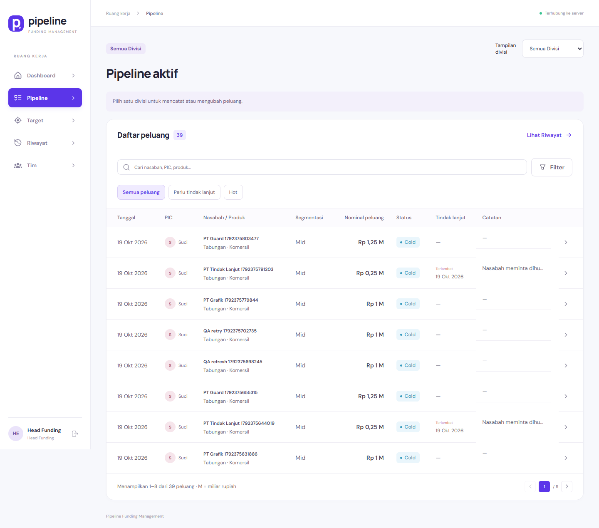
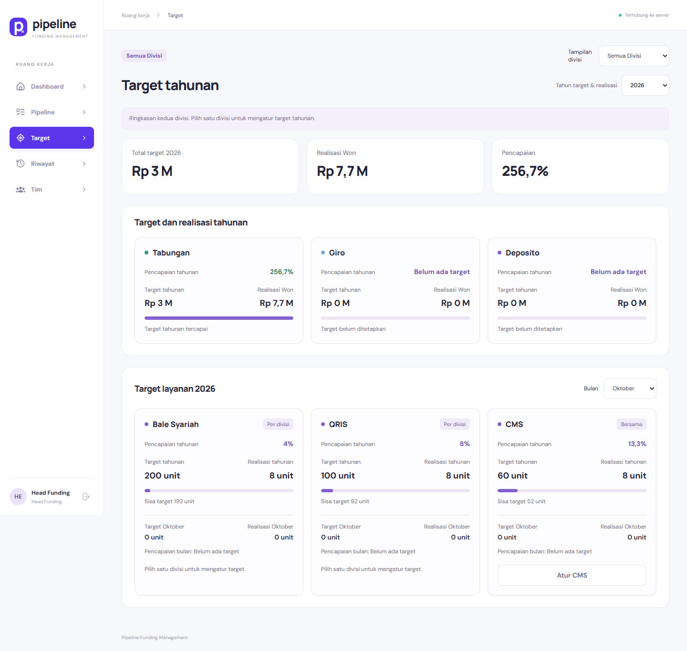
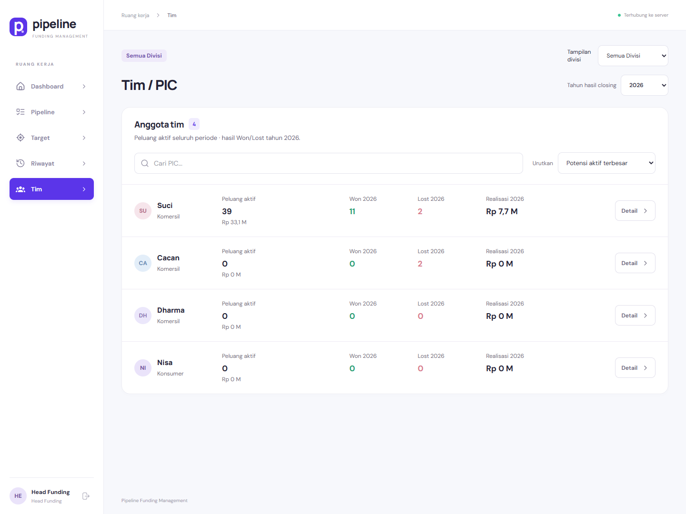

Bisnis dan fitur
Arsitektur dan aliran data
Frontend, API, dan database
Integritas, keamanan, dan pengujian
Latihan penjelasan dan tanya jawab
Vue 3 · Laravel 12 · PostgreSQL 18 · Chart.js 4
Memahami website untuk menjelaskan proyek pada ujian magang.
Bisnis dan fitur
Arsitektur dan aliran data
Frontend, API, dan database
Integritas, keamanan, dan pengujian
Latihan penjelasan dan tanya jawab
Vue 3 · Laravel 12 · PostgreSQL 18 · Chart.js 4
Nomor mengikuti halaman PDF, termasuk lampiran A3.
Nomor mengikuti halaman PDF, termasuk lampiran A3.
Gunakan buku ini untuk memahami hubungan kebutuhan bisnis, antarmuka, API, dan database.
Proyek yang dipelajari adalah Sistem Manajemen Pipeline Funding BSN KC Bekasi. Buku ini disusun dari kode yang tersedia dan pemeriksaan lokal pada 20 Oktober 2026. Tujuannya membantu kamu menerangkan apa yang dibangun, bagaimana data bergerak, mengapa aturan tertentu dipilih, dan di mana batas implementasinya.
| Tahap | Yang harus bisa kamu jelaskan |
|---|---|
| 1 · Bisnis | Masalah pencatatan peluang, pengguna, produk, status, target, dan hasil closing. |
| 2 · Alur | Satu peluang dari pencatatan sampai Won/Lost; perubahan apa yang masuk audit. |
| 3 · Teknis | Vue → HTTP JSON → Laravel → PostgreSQL → data laporan → grafik. |
| 4 · Integritas | Perbedaan validasi, foreign key, transaksi, version, dan idempotency key. |
| 5 · Pembuktian | Apa yang diperiksa tes; apa yang belum dibuktikan oleh audit ini. |
Baca penjelasan, telusuri berkas acuannya, lalu tutup buku dan terangkan kembali dengan bahasa sendiri. Jika belum dapat memberi contoh, ulangi contoh perhitungan dan kasus dua pengguna mengedit data. Tujuannya menguasai sebab-akibat, bukan menghafal nama fungsi.
Lampiran diagram memakai halaman A3 agar teks tetap terbaca. Bab belajar memakai A4. Gunakan daftar isi dan pencarian PDF untuk kembali ke istilah tertentu; tautan sumber resmi dapat diklik.
Layak sebagai dokumentasi teknis dan bahan ujian magang, dengan catatan produksi yang dijelaskan secara terbuka.
Penilaian dilakukan melalui kecocokan diagram dengan kode, verifikasi katalog PostgreSQL, pemeriksaan tata letak, tes otomatis proyek, dan build frontend. Kata “profesional” di sini merupakan penilaian berbasis kriteria tersebut; tidak berarti sertifikasi ISO, audit kepatuhan bank, penetration test menyeluruh, atau persetujuan operasional dari instansi.
| Aspek | Hasil dan dasar penilaian |
|---|---|
| DFD | Konteks dan Level 1–3 tersedia. PIC/Head terpisah, proses bernomor, panah bernama. Pembacaan referensi hasil closing/tindak lanjut dilengkapi. |
| Database | 22 tabel, 162 kolom, 22 FK, 12 UNIQUE, dan 22 PK cocok dengan katalog database aktif. Dua relasi logis pada ERD lengkap dibedakan dari FK SQL. |
| Arsitektur | Vue + Chart.js, Laravel REST API, PostgreSQL sesuai implementasi. Deployment lokal dibedakan dari server publik. |
| Tata letak | PDF DFD empat halaman A3; tidak ditemukan teks terpotong, label bertumpuk, atau ujung panah terlepas pada pemeriksaan renderer. |
| Pengujian | Hasil terbaru dan batas cakupannya dicatat pada bab pengujian. Kelulusan tes bukan bukti bahwa seluruh risiko sudah hilang. |
Pipeline adalah daftar peluang pendanaan yang sedang dikelola, bukan saldo rekening bank.
Dalam konteks aplikasi ini, satu pipeline atau opportunity merepresentasikan peluang funding dari seorang nasabah/perusahaan untuk produk tertentu. Di dalamnya terdapat nominal potensi, PIC penanggung jawab, tingkat ketertarikan, tanggal tindak lanjut, dan hasil akhir. Data membantu tim mengetahui pekerjaan yang harus ditindaklanjuti dan melihat pencapaian terhadap target.
Tabel dapat mencatat angka, tetapi aplikasi ini menambahkan aturan bersama: produk mengikuti divisi, closing mempunyai persyaratan, perubahan dicegah ketika versinya sudah tertinggal, dan laporan dihitung dengan definisi yang sama. Manfaat tersebut berasal dari aturan serta penyimpanan terpusat, bukan sekadar mengganti tampilan spreadsheet menjadi halaman web.
Latihan lisan: jelaskan perbedaan “nominal peluang Rp1 miliar” dengan “realisasi Won Rp600 juta”. Yang pertama potensi; yang kedua hasil closing yang dicatat pengguna.
Cakupan yang jelas membuat penjelasan proyek dapat dipertanggungjawabkan.
| Sudah menjadi cakupan aplikasi | Bukan fitur yang ditunjukkan implementasi saat ini |
|---|---|
| Login dan pembatasan divisi | Single sign-on perusahaan atau multi-factor authentication. |
| Pencatatan, pembaruan, tindak lanjut, closing | Eksekusi transfer, pembukaan rekening, atau transaksi sistem inti bank. |
| Dashboard, target, riwayat, informasi PIC | Prediksi peluang otomatis berbasis AI atau notifikasi WhatsApp/email otomatis. |
| Target dana IDR dan layanan UNIT | Penyamaan unit layanan menjadi nominal dana. |
| Audit perkembangan dan riwayat PIC | Bukti bahwa log kebal manipulasi oleh administrator database. |
| Tampilan responsif dan tes otomatis lokal | Jaminan seluruh browser, beban produksi, dan deployment publik sudah diuji. |
Data bisnis disimpan di PostgreSQL melalui API. Frontend memfokuskan interaksi, sedangkan backend menentukan akses dan validasi final. Penulisan penting memakai transaksi, version checking, dan pengenal retry. Dokumentasi menjelaskan model data serta arus informasi agar pengembang lain dapat memahami hasilnya.
Nasabah ada sebagai customer_name pada peluang, tetapi tidak mempunyai akun aplikasi dalam alur ini. Karena tidak berinteraksi langsung, nasabah tidak digambar sebagai entitas eksternal DFD. Tabel master nasabah juga belum ada; nama yang sama pada dua peluang belum otomatis dianggap satu identitas nasabah.
Untuk pengembangan selanjutnya, kebutuhan identitas nasabah terstruktur, approval target, perubahan closing, dan ekspor laporan harus dirumuskan bersama pengguna. Jangan menambahkan aturan bisnis hanya berdasarkan asumsi teknis.
Role dan divisi menentukan lingkup data; PIC bukan berarti hanya dapat membaca peluang miliknya sendiri.
| Aspek | PIC Komersil | PIC Konsumer | Head Funding |
|---|---|---|---|
| Peluang | Divisi sendiri | Divisi sendiri | Kedua divisi |
| Melihat PIC lain | Ya, dalam divisinya | Ya, dalam divisinya | Ya, sesuai filter |
| Produk dana | Tabungan, Giro, Deposito | Tabungan, Deposito | Mengikuti divisi |
| Layanan | CMS bersama | Bale Syariah, QRIS, CMS | Gabungan / per lingkup |
| Ubah data dana | Divisi sendiri | Divisi sendiri | UI memilih satu divisi |
| Ubah CMS | Diizinkan | Diizinkan | Diizinkan |
| Ubah closing final | Tidak tersedia | Tidak tersedia | Tidak tersedia |
Autentikasi menjawab siapa pengguna yang masuk. Otorisasi menentukan data atau tindakan yang boleh diaksesnya. Token yang sah tidak berarti pengguna boleh membaca semua divisi. Controller tetap membatasi query atau memeriksa resource yang diminta.
Contoh: PIC Konsumer mengubah parameter division_id menjadi ID Komersil. Pada endpoint yang menggunakan lingkup akun PIC, parameter itu tidak memperluas hak akses. Produk Giro dan PIC Komersil juga ditolak ketika dipakai untuk peluang Konsumer. Aturan ini diperiksa pada server, bukan hanya melalui pilihan dropdown.
Kolom users.division_id dapat kosong untuk akun Head. Fungsi isHead() mengidentifikasi role head. Tampilan gabungan berguna untuk pemantauan; saat menulis peluang atau target dana, antarmuka meminta konteks divisi yang jelas.
Satuan yang berbeda tidak boleh dijumlahkan menjadi satu ukuran pencapaian.
| Produk | Satuan | Lingkup yang dipakai |
|---|---|---|
| Tabungan | IDR / rupiah | Konsumer dan Komersil |
| Giro | IDR / rupiah | Komersil |
| Deposito | IDR / rupiah | Konsumer dan Komersil |
| Bale Syariah | UNIT | Konsumer |
| QRIS | UNIT | Konsumer |
| CMS | UNIT | shared / bersama |
Produk ditentukan pada tabel products. Kolom measure membedakan IDR dengan UNIT. Ketersediaan produk per divisi berada pada pivot division_products. Peluang dana hanya menerima produk IDR; produk layanan dicatat melalui target dan realisasi layanan bulanan.
Scope shared tidak terikat pada satu divisi. Akun Komersil dan Konsumer melihat record CMS yang sama. Jika target CMS 100 unit dan realisasi 40 unit, tampilan gabungan tetap 100 dan 40; tidak menjadi 200 dan 80. Ini mencegah penghitungan ganda akibat sekadar menjumlahkan layar dua divisi.
realization pada peluang Won berdasarkan tanggal closing.unit_realizations. Pembaruan mengganti total bulan yang bersangkutan, bukan otomatis menambah transaksi baru.Buku ini membahas cara aplikasi mencatat layanan, bukan prosedur resmi pembukaan atau aktivasi layanan bank. Definisi operasional unit perlu mengikuti kebijakan instansi.
Cold/Warm/Hot menunjukkan ketertarikan; Active/Won/Lost menunjukkan hasil peluang.
| Dimensi | Nilai | Makna dalam aplikasi |
|---|---|---|
| Ketertarikan | Cold | Kategori ketertarikan yang dipilih pengguna. |
| Ketertarikan | Warm | Kategori ketertarikan yang dipilih pengguna. |
| Ketertarikan | Hot | Kategori ketertarikan yang dipilih pengguna; dihitung tersendiri di Dashboard. |
| Hasil | Active | Peluang masih dapat dikelola dan ditindaklanjuti. |
| Hasil | Won | Closing berhasil dengan realisasi dana yang valid. |
| Hasil | Lost | Closing tidak berhasil, dengan alasan dan realisasi nol. |
Peluang baru selalu dibuat Active. Sistem tidak mengubah Hot otomatis menjadi Won. Seorang pengguna masih harus mengirim hasil closing, tanggal, dan realisasi atau alasan Lost. Tidak ada perhitungan probabilitas keberhasilan otomatis untuk kategori minat tersebut.
Catat peluang → perbarui informasi atau penanggung jawab → jadwalkan/selesaikan tindak lanjut → tentukan closing Won atau Lost. Peluang yang sudah closing tetap ada pada record yang sama dan ditampilkan pada Riwayat. Peluang itu tidak dipindahkan ke tabel hasil terpisah.
Tombol penyelesaian tindak lanjut memperbarui follow_up_completed. Outcome tetap Active. Jika jadwal tindak lanjut diubah melalui pembaruan peluang, penanda penyelesaiannya dapat direset agar jadwal baru kembali membutuhkan perhatian.
Istilah “final” pada closing merupakan perilaku versi aplikasi ini. Jika instansi membutuhkan pembatalan closing, desain approval, koreksi realisasi, dan audit perubahan hasil perlu dibuat terlebih dahulu.
Formulir menghubungkan kebutuhan bisnis dengan kolom database yang konkret.
| Isian | Arti dan aturan utama |
|---|---|
| Nasabah / perusahaan | Teks nama; belum merujuk master nasabah. |
| PIC dan produk | PIC aktif serta produk dana yang tersedia pada divisi peluang. |
| Segmentasi | Mid atau Large untuk data baru. Small lama dipertahankan agar record lama tetap dapat diperbarui. |
| Tanggal pencatatan | Tanggal valid dan tidak melebihi hari ini. |
| Nominal | Rupiah bulat lebih dari nol. |
| Cold/Warm/Hot | Kategori minat yang dipilih pengguna. |
| Jadwal tindak lanjut | Opsional; tidak sebelum tanggal pencatatan. |
| Catatan | Keterangan perkembangan peluang. |
| Version | Versi record untuk mencegah pembaruan dari isian yang sudah tertinggal. |
Frontend memvalidasi isian dan mengirim JSON. Backend menentukan divisi yang diizinkan, memeriksa PIC/produk, membuat opportunity Active, membuat penugasan PIC awal, dan mencatat audit pembuatan. Penulisan terkait berada dalam transaksi sehingga tidak meninggalkan peluang tanpa catatan penugasan/audit ketika bagian operasi gagal.
Kolom opportunities.pic_id berubah menjadi penanggung jawab saat ini. Penugasan lama yang masih terbuka ditutup melalui unassigned_at, lalu penugasan baru dibuat. Dengan demikian, “PIC saat ini” dan “pernah ditangani oleh PIC” bisa menjawab dua pertanyaan yang berbeda.
Acuan: pipelineFieldErrors dan OpportunityController::store/update/validated.
Closing adalah satu operasi bisnis yang menyimpan keputusan, nilai, catatan, dan audit.
Tanggal dan versi tetap diperiksa. Pengguna wajib memberikan alasan Lost. Backend memaksa realisasi menjadi nol agar nilai yang tidak semestinya dikirim klien tidak masuk ke hasil Lost. Catatan opsional tetap dapat disimpan sebagai konteks.
Peluang dibaca dengan lockForUpdate() di dalam transaksi. Permintaan lain yang ingin mengubah baris tersebut harus menunggu akses yang sesuai. Setelah giliran didapat, outcome dan versi diperiksa. Dua permintaan tidak boleh sama-sama menutup peluang berdasarkan kondisi awal yang sudah tidak berlaku.
Setelah pembaruan, audit menyimpan snapshot sebelum/sesudah dan pelakunya. Jika penulisan audit gagal, transaksi membatalkan perubahan peluang. Respons sukses baru berarti transaksi berhasil. Relasi PIC, produk, dan divisi dimuat untuk hasil tampilan.
Latihan: alasan penolakan HTTP 409 berbeda dari 422. 409 menunjukkan kondisi/versi konflik; 422 menunjukkan isian tidak memenuhi ketentuan.
Jelaskan halaman berdasarkan keputusan yang dibantu, kemudian hubungkan dengan sumber datanya.
| Halaman / route | Pertanyaan pengguna | Data utama |
|---|---|---|
| Dashboard · / | Apa yang harus dipantau dan ditindaklanjuti? | Ringkasan peluang, target/realisasi, minat, tindak lanjut, tren. |
| Pipeline · /pipeline | Peluang aktif apa yang harus dikelola? | Opportunity aktif, pencarian/filter, formulir dan detail. |
| Target · /target | Berapa target dan pencapaian produk? | Annual target, rincian layanan bulanan, hasil Won. |
| Riwayat · /history | Peluang mana yang sudah Won/Lost? | Opportunity yang sudah closing dan timeline detail. |
| Tim · /tim | Siapa menangani peluang dan bagaimana rekapnya? | PIC, peluang aktif/final, dan riwayat penugasan. |
Dashboard, Tim, dan Riwayat merupakan penyajian/query dari data operasional. Tidak ada tabel dashboard, history, atau team yang menduplikasi semua peluang. Perubahan pada opportunity yang sama menjadi dasar tampilan aktif maupun hasil closing. Ini mengurangi risiko dua tabel terpisah tidak sinkron.
Panel detail dipakai untuk melihat informasi peluang, melakukan tindak lanjut, mengubah peluang aktif, memeriksa timeline, dan melakukan closing. Pilihan tindakan mengikuti kondisi record dan hak akses. Formulir yang berubah dilindungi ketika pengguna berpindah atau menutup halaman.
Pencarian, filter, pengurutan, dan halaman daftar dapat disimpan pada query di dalam hash route. Refresh atau tombol kembali dapat mengembalikan konteks daftar. Penyimpanan ini membantu navigasi; tidak menggantikan penyimpanan data bisnis di PostgreSQL.
Angka yang tampil harus dibaca bersama satuan, lingkup, periode, dan definisinya.
| Indikator | Definisi implementasi |
|---|---|
| Jumlah / nominal aktif | Opportunity Active pada lingkup terpilih, mencakup seluruh tahun pencatatan. |
| Hot aktif | Peluang Active dengan interest_status Hot; bukan seluruh record yang pernah Hot. |
| Tindak lanjut jatuh tempo | Active, mempunyai jadwal ≤ hari ini, dan belum selesai. Ringkasan backend menampilkan maksimal lima item. |
| Realisasi dana | Jumlah realization dari Won pada tahun closed_date terpilih. |
| Target tahunan | Target produk dana menurut scope divisi dan tahun. |
| Persentase | Realisasi / target × 100; null bila target nol. |
| Sisa target | Maksimum antara nol dan target dikurangi realisasi. |
Tahun dipakai untuk target/realisasi dan tren, sedangkan pekerjaan aktif tetap perlu ditangani walaupun dicatat tahun lalu. Jika semua peluang aktif disaring berdasarkan tahun pencatatan, pekerjaan lama yang belum selesai dapat tersembunyi. Karena itu antarmuka menjelaskan “semua periode” pada indikator aktif.
Doughnut memperlihatkan komposisi jumlah peluang Active menurut Cold/Warm/Hot. Grafik perbandingan batang memperlihatkan target dan realisasi produk dana. Grafik garis memperlihatkan nominal peluang menurut bulan pencatatan serta realisasi Won menurut bulan closing. Grafik garis tersebut bukan rekaman saldo pipeline pada akhir setiap bulan.
Acuan: DashboardReport::build dan DashboardView.vue.
Seluruh nama/angka pada contoh ini fiktif dan dipakai untuk memahami rumus.
| Peluang | Produk | Dicatat | Hasil / closing | Nominal | Realisasi |
|---|---|---|---|---|---|
| A | Tabungan | Nov 2025 | Active · Hot | Rp1 miliar | Rp0 |
| B | Tabungan | Des 2025 | Won · Jan 2026 | Rp800 juta | Rp600 juta |
| C | Giro | Jan 2026 | Lost · Jan 2026 | Rp500 juta | Rp0 |
| D | Deposito | Feb 2026 | Won · Feb 2026 | Rp200 juta | Rp200 juta |
| E | Tabungan | Mar 2026 | Active · Cold | Rp300 juta | Rp0 |
Asumsikan kelima peluang berada pada divisi Komersil. Target 2026: Tabungan Rp2 miliar, Giro Rp1 miliar, Deposito Rp1 miliar. Data dinilai pada 2026 setelah bulan Maret. Contoh ini sengaja mempunyai peluang tahun lalu agar perbedaan tahun pencatatan dan tahun closing terlihat.
Peluang Active adalah A dan E: jumlah 2, nominal potensi Rp1,3 miliar. Peluang A tetap masuk walaupun dicatat 2025. Hot aktif hanya A: jumlah 1, nominal Rp1 miliar. Komposisi minat aktif menjadi Cold 50%, Warm 0%, Hot 50%.
Peluang Won adalah B dan D: jumlah 2, realisasi Rp800 juta. Peluang Lost adalah C: jumlah 1 dan tidak menambah realisasi. B masuk realisasi 2026 karena ditutup pada Januari 2026, walaupun dicatat Desember 2025.
Dalam aplikasi, rupiah disimpan sebagai bilangan bulat. Tulisan “Rp1,3 M” hanya pemformatan penyajian dengan M bermakna miliar pada antarmuka ini.
Persentase, sisa target, dan progress bar tidak selalu menunjukkan nilai yang identik.
| Produk | Target 2026 | Realisasi Won | Pencapaian | Sisa |
|---|---|---|---|---|
| Tabungan | Rp2 miliar | Rp600 juta | 30% | Rp1,4 miliar |
| Giro | Rp1 miliar | Rp0 | 0% | Rp1 miliar |
| Deposito | Rp1 miliar | Rp200 juta | 20% | Rp800 juta |
| Total dana | Rp4 miliar | Rp800 juta | 20% | Rp3,2 miliar |
persentase = realisasi / target × 100, jika target > 0
sisa = max(0, target - realisasi)
aktif = jumlah nominal peluang dengan outcome ActivePersentase total dihitung dari total realisasi dibagi total target, bukan rata-rata sederhana dari persentase tiga produk. Pada contoh ini (30% + 0% + 20%) / 3 = 16,67% akan salah karena besar target produknya berbeda.
Jika suatu produk belum mempunyai target atau targetnya nol, persentase dikembalikan sebagai null. Antarmuka dapat menampilkan “Belum ada target”. Tidak ada pembagian nol. Realisasi tetap boleh ditampilkan sebagai informasi, tetapi belum menjadi persentase pencapaian yang bermakna.
Target Rp1 miliar dan realisasi Rp1,2 miliar menghasilkan 120%. Sisa target tetap nol. Progress bar visual dapat dibatasi pada panjang penuh, sementara angka 120% tetap menunjukkan kelebihan pencapaian. Panjang bar adalah bentuk penyajian; rumus angka utama tidak perlu dipaksa menjadi maksimum 100%.
Rumus dana memakai satuan IDR. Nilai layanan tidak masuk penyebut maupun pembilang target dana.
Satu sistem dapat memakai tanggal yang berbeda untuk pertanyaan bisnis yang berbeda.
| Pertanyaan | Dasar waktu |
|---|---|
| Kapan peluang masuk pencatatan? | recorded_date |
| Kapan peluang menghasilkan realisasi? | closed_date dan outcome Won |
| Kapan tindakan perlu dilakukan? | follow_up_date dan penanda selesai |
| Kapan record diubah? | updated_at |
| Kapan kejadian audit tercatat? | occurred_at |
Pada contoh A–E, tren nominal pencatatan 2026 mencatat C Rp500 juta pada Januari, D Rp200 juta pada Februari, dan E Rp300 juta pada Maret. Total nominal tercatat 2026 adalah Rp1 miliar. Realisasi Januari Rp600 juta berasal dari B; Februari Rp200 juta dari D. Nilai ini menjawab pertanyaan berbeda sehingga kedua garis tidak harus sama.
Anggap target CMS tahunan 100 unit, total aktual Januari 25 unit dan Februari 15 unit. Realisasi tahunan 40 unit, pencapaian 40%, sisa 60 unit. Jika Februari dikoreksi menjadi 18 unit, total tahunan menjadi 43, bukan 58; record Februari diganti dari 15 menjadi 18.
Target tahunan dan target bulanan dicatat terpisah. Aturan saat ini belum mewajibkan jumlah target 12 bulan sama dengan target tahunan. Hal ini perlu dijelaskan apa adanya. Bila instansi membutuhkan rekonsiliasi otomatis, aturan validasi tersebut harus ditambahkan setelah kebutuhannya ditetapkan.
Realisasi layanan adalah input manual; aplikasi ini tidak menarik bukti aktivasi QRIS, Bale Syariah, atau CMS dari sistem operasional bank.
Tiga jenis riwayat menjawab tiga pertanyaan yang berbeda.
| Jenis informasi | Pertanyaan | Sumber |
|---|---|---|
| Riwayat closing | Peluang apa yang sudah selesai dan hasilnya apa? | opportunities dengan outcome Won/Lost. |
| Timeline perkembangan | Siapa mengubah apa, kapan, dan nilai apa yang berubah? | audit_events untuk resource peluang. |
| Riwayat penugasan | PIC mana yang pernah menangani peluang ini? | opportunity_assignments dan PIC saat ini/final. |
Satu peluang bisa berganti PIC beberapa kali. Daftar pernah ditangani dapat tetap menyebut PIC lama, tetapi rekap hasil Won/Lost memakai PIC pada opportunity saat ini/final. Dengan demikian, “pernah menangani” bukan berarti setiap PIC tersebut memperoleh penghitungan penuh realisasi yang sama.
TeamView.vue menyusun rekap dari data scoped yang dimuat oleh usePipeline: aktif seluruh periode, sedangkan Won/Lost dan realisasi mengikuti tahun closing. API juga memiliki endpoint rekap Tim dan peluang pernah ditangani PIC. Keberadaan endpoint tidak berarti setiap angka pada layar langsung berasal dari endpoint tersebut; jalur data UI harus ditelusuri.
Audit menyimpan pelaku, jenis resource, ID resource, aksi, waktu, serta snapshot sebelum/sesudah perubahan yang dicatat aplikasi. Token dan password tidak menjadi isi audit bisnis. Hubungan resource_type/resource_id adalah referensi logis sehingga dapat menunjuk beberapa tipe resource; bukan satu foreign key lintas tabel.
Latihan: jelaskan mengapa mengganti PIC saja tidak cukup dilakukan dengan menimpa nama PIC pada satu kolom teks.
Pembagian tanggung jawab membantu memahami keseluruhan sistem.
| Lapisan | Komponen proyek | Tanggung jawab |
|---|---|---|
| Presentasi | Vue, Vue Router, komponen, CSS, Chart.js | Interaksi, formulir, navigasi, tampilan responsif, grafik. |
| Aplikasi | Laravel routes, middleware, controller, DashboardReport | Autentikasi, akses, validasi final, transaksi, perhitungan utama, respons JSON. |
| Penyimpanan | PostgreSQL dan model Eloquent | Record, hubungan, constraint, pencarian, dan penyimpanan yang dipakai aplikasi. |
Backend merupakan satu aplikasi Laravel. Pembagian tiga lapis tidak berarti tiga microservice. Browser tidak terhubung langsung ke PostgreSQL dan tidak menyimpan kata sandi database. Jalur data operasional melalui API sehingga aturan akses dapat diterapkan secara konsisten.
Vue → GET /api/dashboard?year=2026
→ Sanctum mengenali pengguna
→ controller menentukan divisi
→ DashboardReport membaca dan menghitung
→ JSON dikembalikan
→ komponen Vue / Chart.js menampilkan hasilJika akses hanya difilter di browser, pengguna dapat mengubah kode/parameter dan meminta data lain. Jika perhitungan utama hanya ada di masing-masing layar, definisi dapat berbeda. Backend menjadi tempat pemeriksaan final dan agregasi dana utama, sementara frontend tetap mengolah data yang telah dibatasi akses untuk format, filter tampilan, layanan, dan beberapa rekap Tim.
Gambar arsitektur yang lebih besar disertakan pada lampiran. Port lokal dan contoh konfigurasi adalah pengaturan pengembangan, bukan bukti aplikasi sudah dipublikasikan.
Frontend dan backend berkomunikasi melalui permintaan dan respons yang terstruktur.
HTTP menyediakan metode, alamat endpoint, header, dan status respons. JSON menjadi format data. API memungkinkan antarmuka meminta data atau melakukan tindakan tanpa mengakses tabel database secara langsung. Istilah REST API pada proyek merujuk API berbasis resource dan HTTP; beberapa operasi khusus seperti closing memakai endpoint tindakan.
POST /api/opportunities/123/closing
Authorization: Bearer <token pengguna>
Content-Type: application/json
Idempotency-Key: <UUID permintaan>
{
"outcome": "Won",
"realization": 600000000,
"closed_date": "2026-10-20",
"version": 3,
"notes": "Contoh belajar, bukan data operasional"
}| Status | Makna yang relevan pada aplikasi |
|---|---|
| 200 / 201 | Permintaan berhasil / resource baru dibuat. |
| 204 | Logout berhasil tanpa body. |
| 401 | Tidak memiliki autentikasi yang sah. |
| 403 / 404 | Akses ditolak atau resource tidak tersedia pada lingkup pengguna. |
| 409 | Konflik versi, sudah closing, atau key dipakai dengan payload berbeda. |
| 422 | Isian tidak memenuhi validasi. |
| 429 | Terlalu banyak percobaan login. |
| 5xx | Gangguan server; hasil tulis dapat belum pasti bagi klien. |
Contoh body di atas bersifat ilustrasi; ID, versi, dan tanggal harus mengikuti data yang memang tersedia ketika demo. Token asli tidak perlu ditunjukkan pada slide atau materi belajar.
Gunakan diagram yang sesuai untuk menjawab jenis pertanyaan penguji.
| Diagram | Yang dijelaskan | Contoh pertanyaan |
|---|---|---|
| DFD | Asal, transformasi, penyimpanan, dan tujuan data. | Data closing masuk ke proses mana, lalu disimpan di mana? |
| ERD | Entitas/tabel, atribut, hubungan, dan kardinalitas. | Mengapa satu target dapat memiliki 12 record bulanan? |
| Arsitektur | Komponen dan pembagian tanggung jawab teknis. | Di mana validasi final dan perhitungan laporan dijalankan? |
| Sequence | Pertukaran pesan menurut interaksi/waktu. | Apa yang terjadi ketika request tulis diulang? |
Penomoran tingkat dapat berbeda pada pedoman kampus; dokumen ini menyatakannya secara eksplisit. Level 3 tersedia untuk proses closing, bukan klaim bahwa semua proses Level 1 sudah didekomposisi sampai kedalaman yang sama.
Ketika proses diuraikan, masukan/keluaran gabungan anak harus tetap menjelaskan batas proses induk. Aliran internal dapat bertambah, tetapi entitas atau penyimpanan eksternal tidak boleh muncul tanpa konsistensi dengan induknya. Karena hasil closing memuat PIC, produk, dan divisi, pembacaan referensi tersebut ditunjukkan pada diagram yang ditinjau.
Versi berasal dari lockfile proyek dan runtime lokal; bukan klaim memakai versi terbaru di internet.
| Teknologi | Versi terverifikasi | Peran |
|---|---|---|
| Vue | 3.5.42 | Framework antarmuka berbasis komponen. |
| Vue Router | 4.6.4 | Navigasi SPA dan hash history. |
| Vite | 7.3.6 | Dev server dan build frontend. |
| Chart.js | 4.5.1 | Grafik batang, doughnut, dan garis. |
| PHP | 8.2.12 lokal; requirement ^8.2 | Bahasa backend untuk Laravel. |
| Laravel | 12.69.2 | Routing, middleware, ORM, validasi, transaksi, API. |
| Laravel Sanctum | 4.3.3 | Penerbitan dan pemeriksaan token API. |
| PostgreSQL | 18.4 lokal | Database relasional operasional. |
| Node.js | 24.15.0 lokal | Menjalankan tooling frontend dan tes JavaScript. |
| Playwright Test | 1.63.0 | Tes browser end-to-end. |
| PHPUnit | 11.5.56 | Tes backend PHP. |
| Prettier | 3.9.6 | Pemformatan kode frontend. |
Vue dan Laravel menyediakan kerangka pengembangan pada lapisan masing-masing. Chart.js merupakan library untuk kebutuhan grafik. PHP dan Node.js menjalankan kode pada konteks yang berbeda. PostgreSQL menyimpan serta mengelola data. Vite membantu pengembangan/build; Vite tidak mengambil alih tugas backend Laravel.
Acuan lokal: src/frontend/package-lock.json, src/backend/composer.lock, serta inspeksi runtime/database. Font dan ikon berasal dari paket lokal; penyajian aplikasi tidak bergantung pada CDN font untuk berjalan.
Alasan yang baik menghubungkan teknologi dengan kebutuhan proyek, bukan hanya popularitas.
| Pilihan | Kesesuaian kebutuhan | Konsekuensi / batas |
|---|---|---|
| Vue + komponen | Formulir dan kartu target dapat dipakai ulang; state UI reaktif. | Membutuhkan pengaturan state, lifecycle, dan penanganan request. |
| Laravel API | Aturan akses, validasi, ORM, dan transaksi tersedia dalam satu backend. | Logika perlu tetap terstruktur; framework tidak otomatis menyelesaikan semua aturan bisnis. |
| PostgreSQL | Data saling berelasi serta membutuhkan transaksi dan constraint. | Desain indeks, backup, dan operasional server tetap perlu dikelola. |
| Chart.js | Jenis grafik yang dipakai proyek tersedia dan terintegrasi pada canvas. | Aksesibilitas dan interpretasi angka tetap tanggung jawab aplikasi. |
| SPA | Navigasi internal dan panel detail dapat berlangsung tanpa memuat seluruh dokumen baru. | Perlu strategi sesi, pemuatan data, serta penanganan error yang baik. |
| Satu backend | Cakupan proyek masih dapat dikelola tanpa pemisahan layanan. | Perlu pengukuran sebelum memutuskan skala arsitektur berikutnya. |
Pilihan tersebut adalah pertimbangan kecocokan untuk implementasi ini. Jangan mengatakan PostgreSQL selalu lebih cepat daripada semua database atau Vue selalu lebih baik daripada React. Tidak ada benchmark perbandingan alternatif yang dikerjakan pada audit ini.
Jika ditanya “mengapa tidak pakai teknologi lain?”, jelaskan kebutuhan inti: UI dinamis, data relasional, aturan bisnis, dan integritas penyimpanan. Lalu tunjukkan fitur teknologi yang mendukungnya. Akhiri dengan konsekuensi yang kamu pahami, misalnya kebutuhan mengelola state SPA atau menerapkan validasi server.
Reaktivitas membuat tampilan mengikuti perubahan state tanpa menulis manipulasi DOM untuk setiap angka.
Vue membangun antarmuka secara deklaratif dan berbasis komponen. Pengembang menyatakan hubungan data dengan tampilan; Vue melacak perubahan state dan memperbarui bagian antarmuka yang membutuhkannya. Pada proyek ini halaman, panel detail, kartu target, dan grafik dipisah menjadi komponen.
Rujukan konsep: V1 — Vue 3 — Introduction · V2 — Vue — Reactivity Fundamentals
| API / konsep | Penerapan proyek |
|---|---|
| ref | Nilai reaktif seperti pengguna, tahun, array peluang, status loading, dan panel terpilih. |
| computed | Nilai turunan: produk yang diizinkan, daftar aktif/closing, ringkasan tampilan, dataset grafik. |
| watch | Menanggapi perubahan tertentu; komponen grafik menggambar ulang saat data berubah. |
| props / event | Data masuk ke komponen dan pemberitahuan tindakan kembali ke induknya. |
| lifecycle | Grafik dibuat setelah canvas tersedia dan dibersihkan sebelum komponen dilepas. |
const selectedYear = ref(2026)
const activeRows = computed(() =>
rows.value.filter(row => !isClosed(row))
)Contoh ringkas tersebut mengikuti pola pada usePipeline.js. Ketika daftar peluang diperbarui setelah simpan, activeRows dapat dihitung kembali. Penyaringan ini menyajikan data yang sudah dibatasi akses oleh backend; bukan pengganti pemeriksaan izin.
Jebakan ujian: mengubah nilai ref hanya mengubah state proses browser. Data baru permanen setelah operasi API berhasil dan transaksi database selesai.
Proyek menggunakan Composition API dan composable; tidak menunjukkan pemakaian Pinia sebagai store utama.
Computed menyimpan hasil turunan berdasarkan dependensi reaktif dan mengevaluasi ulang ketika dependensinya berubah. Composable adalah fungsi yang mengemas logika reaktif agar dapat dipakai kembali oleh komponen. Keduanya membantu memisahkan logika dari template.
Rujukan konsep: V3 — Vue — Computed Properties · V4 — Vue — Composables
| Berkas | Tanggung jawab yang dapat ditelusuri |
|---|---|
| useSession.js | Identitas pengguna, inisialisasi /me, login, logout, dan respons ketika token tidak sah. |
| usePipeline.js | Master, peluang, target, ringkasan, tahun, pilihan divisi Head, dan operasi data. |
| useUnsavedChanges.js | Pengaman ketika formulir berubah lalu pengguna meninggalkan konteks. |
| services/api.js | Fetch, bearer header, timeout, error status, dan penyimpanan request retry yang belum pasti. |
| utils/pipeline.js | Validasi awal, format rupiah, kategori status, tanggal, dan utilitas perhitungan. |
State tingkat modul dapat dipakai bersama oleh komponen yang mengimpor composable tersebut dalam aplikasi browser yang sama. Ini menjelaskan mengapa pilihan tahun atau data yang dimuat dapat konsisten pada beberapa tampilan. Desain ini berbeda dari membuat state baru setiap kali suatu fungsi dipanggil.
Loader merekam konteks pengguna, divisi, dan tahun, serta nomor urut request. Sebelum menerapkan respons, kode memastikan konteksnya masih berlaku. Jika Head beralih dari Komersil ke Konsumer ketika respons Komersil terlambat tiba, respons lama diabaikan.
URL menggambarkan posisi antarmuka, sedangkan API menentukan data yang berhak diterima.
Router proyek memakai createWebHashHistory(). Contoh alamatnya /#/pipeline. Bagian setelah tanda # ditangani browser dan tidak dikirim sebagai path request ke server. Mode ini mengurangi kebutuhan pengaturan fallback route pada server untuk navigasi SPA.
Rujukan konsep: R1 — Vue Router — History Modes
Sebelum navigasi, beforeEach menunggu inisialisasi sesi. Halaman selain login mengarah ke login ketika tidak ada pengguna yang sah pada state aplikasi. Setelah navigasi, judul dokumen diperbarui. Watcher sesi juga dapat mengarahkan kembali ke login setelah respons API 401.
Seorang pengguna dapat melewati antarmuka dan mengirim request langsung. Karena itu route guard meningkatkan pengalaman pengguna, sedangkan Sanctum dan controller backend menjaga akses data. Menyembunyikan menu saja tidak cukup melindungi endpoint.
Detail dan formulir muncul melalui komponen drawer. Navigasi kembali atau penutupan tab ketika isian berubah dapat memicu konfirmasi. Menu ponsel mempunyai pengaturan fokus dan penutupan dengan Escape. Semua itu membantu mencegah kehilangan isian dan membuat penggunaan keyboard lebih terarah.
Latihan: jelaskan mengapa URL /#/target berbeda dari endpoint /api/targets. Yang pertama memilih layar; yang kedua meminta data target.
Tooling pengembangan frontend tidak sama dengan server API produksi.
Vite menyediakan dev server dan perintah build. Dokumentasi Vite 7 yang sesuai dengan versi proyek menjelaskan penggunaan native ES modules/HMR saat pengembangan serta Rollup untuk build produksi. Jangan mengambil rincian bundler dari dokumentasi mayor Vite lain lalu menganggapnya otomatis berlaku pada proyek ini.
Rujukan konsep: T1 — Vite 7 — Getting Started
Node.js adalah runtime JavaScript di luar browser. Pada proyek ini Node menjalankan Vite, pengujian logika, Playwright, dan script dokumentasi. API bisnis tetap dijalankan oleh PHP/Laravel; keberadaan Node tidak berarti proyek memakai backend Express.
Rujukan konsep: N1 — Node.js — Introduction
| Perintah / berkas | Arti |
|---|---|
| npm run dev | Menjalankan Vite untuk pengembangan frontend. |
| npm run build | Menghasilkan aset frontend untuk penyajian produksi. |
| npm test | Menjalankan tes logika JavaScript yang dikonfigurasi proyek. |
| package.json | Daftar dependensi dan scripts. |
| package-lock.json | Versi dependensi yang telah diresolusikan. |
| vite.config.js | Plugin Vue, host lokal, dan proxy /api. |
Browser mengirim request ke alamat frontend dengan awalan /api. Vite meneruskannya ke Laravel pada port lokal backend. Proxy membantu alur pengembangan; backend tetap menerima request dan melakukan validasi. Proxy bukan lapisan keamanan dan bukan tanda API di internet sudah menggunakan HTTPS.
HMR membantu perubahan komponen terlihat cepat selama pengembangan. HMR bukan mekanisme distribusi pembaruan produksi dan bukan alasan menjalankan dev server sebagai server publik permanen.
Grafik membantu membaca data; angka dan penjelasan teks tetap diperlukan.
Chart.js menyediakan visualisasi pada canvas. Proyek mendaftarkan controller, elemen, dan skala yang dipakai lalu membuat grafik dari props komponen. ReportChart.vue menggambar ulang saat data berubah dan menghancurkan instance sebelum komponen dilepas.
Rujukan konsep: C1 — Chart.js — Introduction
| Visual | Data yang dipakai | Hal yang harus dijelaskan |
|---|---|---|
| Batang | Target tahunan dan realisasi Won per produk dana. | Keduanya mempunyai satuan rupiah yang sama. |
| Doughnut | Jumlah peluang aktif menurut Cold/Warm/Hot. | Persentase komposisi jumlah, bukan probabilitas closing. |
| Garis | Nominal per bulan pencatatan dan realisasi per bulan closing. | Bukan saldo historis akhir bulan. |
| Progress bar | Proporsi pencapaian terhadap target. | Angka persentase dapat melebihi 100% walau bar dibatasi panjangnya. |
Dokumentasi Chart.js menjelaskan perlunya nama aksesibel atau konten alternatif. Komponen proyek menggunakan role="img", aria-label, dan fallback teks pada canvas. Nilai ringkasan juga disajikan sebagai teks di halaman.
Rujukan konsep: C2 — Chart.js — Accessibility
CSS menyesuaikan grid, sidebar, kartu, dan daftar ketika lebar layar berubah. Komponen grafik memakai ukuran responsif dan mematikan animasi ketika perangkat meminta pengurangan gerak. Tes layout memeriksa lebar 1440, 390, dan 320 piksel pada tiga kelompok akun.
Backend menerima request, menerapkan aturan, dan menghasilkan respons.
PHP merupakan bahasa scripting yang sesuai untuk pengembangan web dan dapat dijalankan pada server maupun CLI. Singkatan PHP bersifat rekursif: PHP: Hypertext Preprocessor. Pada proyek ini PHP mengeksekusi Laravel; tampilan utama pengguna dibangun dengan Vue, sehingga respons API bisnis umumnya berupa JSON.
Rujukan konsep: H1 — PHP — Introduction
Secara umum request Laravel masuk melalui public/index.php, bootstrap aplikasi, middleware, routing, dan controller. Respons berjalan kembali melalui middleware sebelum dikirim ke klien. Pemahaman alur ini membantu mengetahui di mana validasi atau autentikasi dilakukan.
Rujukan konsep: L1 — Laravel 12 — Request Lifecycle
| Bagian | Contoh dalam proyek |
|---|---|
| Routes | routes/api.php mendefinisikan alamat dan metode. |
| Middleware | auth:sanctum dan IdempotentWrite. |
| Controller | OpportunityController, TargetController, ReportController, AuthController. |
| Layanan | DashboardReport untuk agregasi laporan. |
| Model | Opportunity, User, AnnualTarget, AuditEvent, dan relasinya. |
| Konfigurasi | Database, timezone aplikasi, dan Sanctum. |
Laravel dapat membuat halaman HTML melalui Blade, tetapi pembagian tanggung jawab proyek ini memakai Vue sebagai UI. Backend mengembalikan data JSON yang dibaca composable. Menyebut Laravel “MVC” secara umum tidak mengharuskan setiap layar proyek memakai view Blade.
Jika penguji meminta contoh logika buatan proyek, tunjukkan pembatasan divisi, aturan Won/Lost, batch target, audit perubahan, dan replay request. Itu lebih menunjukkan pemahaman daripada hanya menyebut framework menyediakan banyak fitur.
Tidak semua fitur adalah CRUD penuh: penghapusan peluang tidak disediakan pada endpoint utama.
| Metode | Endpoint | Fungsi |
|---|---|---|
| POST | /api/login | Login dan token baru. |
| GET / POST | /api/me · /api/logout | Identitas / pencabutan token aktif. |
| GET | /api/divisions · /products · /pics | Referensi sesuai akses. |
| GET / POST | /api/opportunities | Daftar / pencatatan peluang. |
| GET / PATCH | /api/opportunities/{id} | Detail timeline / pembaruan aktif. |
| POST | /api/opportunities/{id}/follow-up-completion | Menyelesaikan tindak lanjut. |
| POST | /api/opportunities/{id}/closing | Satu operasi hasil closing. |
| GET | /api/targets?year=YYYY | Target dalam scope yang boleh dibaca. |
| POST | /api/targets/batch | Simpan satu formulir target/layanan atomik. |
| GET | /api/dashboard?year=YYYY | Ringkasan dana dan tren. |
| GET | /api/team | Rekap API PIC. |
| GET | /api/pics/{id}/opportunities | Peluang pernah ditangani PIC. |
Endpoint kompatibilitas untuk target per produk, realisasi unit bulanan, serta target cabang tetap ada. Hal ini menjaga data/alur lama, tetapi tampilan terbaru menekankan target dana tahunan dan formulir batch. Jelaskan endpoint utama yang dipakai alur sekarang terlebih dahulu.
Metode tersebut membedakan perubahan resource yang sudah ada dari pencatatan melalui POST. Perintah closing dipisahkan agar aturan hasil akhir dapat diperiksa secara eksplisit; pengguna tidak cukup mengirim outcome Won melalui formulir peluang baru.
Nama endpoint di tabel bersumber dari routes/api.php. Ketiadaan tombol hapus adalah batas fitur saat ini; bukan bukti tidak ada pihak yang dapat menghapus data melalui hak database.
ORM mempermudah akses data, tetapi constraint dan aturan bisnis tetap harus dirancang.
Eloquent merepresentasikan tabel sebagai model dengan hubungan yang dapat diakses melalui kode. Relasi seperti belongsTo dan hasMany membantu memuat data terkait; eager loading dengan with mengurangi pemanggilan query satu per satu pada daftar terkait.
Rujukan konsep: L4 — Laravel 12 — Eloquent Relationships
Opportunity::with(['division', 'pic', 'product'])
->where('division_id', $divisionId)
->where('outcome', 'Active')
->paginate(20);Contoh ringkas ini memperlihatkan model, batas divisi, status, dan paginasi. Implementasi daftar proyek menyediakan pencarian, filter, whitelist pengurutan, serta pembatasan ukuran halaman maksimum 100. Query tidak boleh mengandalkan filter UI sebagai satu-satunya penjaga scope.
| Relasi | Makna |
|---|---|
| Opportunity belongsTo User melalui pic_id | Satu penanggung jawab saat ini/final. |
| Opportunity hasMany assignments | Beberapa riwayat penugasan sepanjang umur peluang. |
| AnnualTarget hasMany monthlyTargets | Target tahunan dengan rincian target bulanan. |
| AnnualTarget hasMany unitRealizations | Total unit pada bulan-bulan tahun target yang sama. |
| User belongsTo Division | PIC terhubung ke divisi; Head boleh tidak memiliki divisi tetap. |
Timeline menambahkan nama PIC/produk ke snapshot melalui pencarian berdasarkan ID. Pada timeline yang sangat panjang, jumlah query tambahan perlu diukur. ORM bukan jaminan bebas masalah N+1; jalur kode yang benar-benar dipakai tetap perlu ditinjau dan diprofilkan.
Tiga lapisan pemeriksaan mempunyai tugas yang saling melengkapi.
Laravel menyediakan aturan validasi dan menghasilkan respons error terstruktur untuk request yang sesuai. Di proyek ini request API diatur untuk merespons JSON, termasuk kesalahan autentikasi dan validasi. Pengalaman isian tetap dibantu validasi frontend agar kesalahan umum segera terlihat.
Rujukan konsep: L5 — Laravel 12 — Validation
| Lapisan | Contoh | Batasnya |
|---|---|---|
| Frontend | Isian wajib, rupiah aman, tanggal, pesan di bawah kolom. | Dapat dilewati dengan request API langsung. |
| Backend | PIC/produk sesuai divisi, syarat closing, versi, scope target. | Perlu konsistensi ketika ada klien/endpoint baru. |
| Database | PK, FK, UNIQUE, NOT NULL, transaksi. | Tidak semua aturan bisnis telah diwujudkan sebagai constraint SQL. |
Sebuah ID produk yang ada di products dan ID divisi yang ada di divisions masing-masing dapat valid sebagai FK. Namun kombinasi Giro–Konsumer tetap tidak diperbolehkan bisnis. Karena tidak ada FK komposit opportunity ke pasangan division_products untuk aturan itu, controller memeriksa kesesuaian produk/divisi secara eksplisit.
Kelompokkan tabel berdasarkan tanggung jawab, lalu pelajari tabel yang terlibat dalam satu alur.
| Kelompok | Tabel |
|---|---|
| Master / akun | divisions, users, products, division_products, target_scopes. |
| Peluang / penugasan | opportunities, opportunity_assignments. |
| Target / layanan | annual_targets, monthly_targets, unit_realizations, branch_targets. |
| Jejak / retry | audit_events, request_receipts. |
| Token API | personal_access_tokens. |
| Infrastruktur Laravel | password_reset_tokens, sessions, cache, cache_locks, jobs, job_batches, failed_jobs, migrations. |
Jumlahnya adalah 13 tabel domain jika akun/master, peluang, target, audit, dan receipt dikelompokkan sebagai domain; 1 tabel token Sanctum; serta 8 tabel infrastruktur. Pengelompokan ini untuk penjelasan proyek, bukan kategori bawaan PostgreSQL.
Tabel password_reset_tokens tidak membuktikan ada halaman reset password yang siap dipakai. Tabel sessions tidak berarti SPA ini memakai sesi cookie. Tabel jobs tidak berarti simpan peluang harus menunggu queue worker. Periksa route, controller, dan antarmuka sebelum menyatakan suatu fitur tersedia.
Katalog database aktif menunjukkan 22 tabel, 162 kolom, 22 primary key, 22 foreign key, dan 12 unique constraint. Daftar tabel, nama/tipe/nullability kolom, serta definisi constraint cocok dengan schema.json yang digunakan untuk dokumentasi. Pemeriksaan ini membaca metadata tanpa mengekspor record operasional atau kredensial.
Kamus seluruh kolom disertakan dalam lampiran buku. ERD lengkap berukuran besar juga tersedia sebagai berkas terpisah pada paket desain sistem.
Hubungan tabel menjaga identitas serta keterkaitan; aturan bisnis melengkapi hubungan itu.
Primary key mengidentifikasi baris secara unik dan tidak null. Foreign key menjaga rujukan ke baris yang diizinkan ada pada tabel tujuan. UNIQUE membatasi duplikasi nilai atau kombinasi nilai. Ketiga konsep itu berbeda dari indeks biasa yang terutama membantu pencarian.
Rujukan konsep: P2 — PostgreSQL 18 — Constraints
| Contoh proyek | Makna desain |
|---|---|
| opportunities.id | Identitas peluang tetap sama sebelum dan sesudah closing. |
| opportunities.pic_id → users.id | Penanggung jawab harus merujuk akun yang ada; role/divisi diperiksa aplikasi. |
| division_products PK gabungan | Pasangan divisi–produk yang sama tidak berulang. |
| annual_targets UNIQUE scope, product, year | Satu target produk untuk satu scope dan tahun. |
| monthly_targets UNIQUE target, month | Satu rincian target untuk bulan yang sama. |
| request_receipts UNIQUE user, request_key | Satu pengenal retry tidak menghasilkan dua receipt untuk pengguna yang sama. |
Jika nama dan satuan produk disalin ke setiap peluang, perubahan informasi master mudah tidak konsisten. Referensi ID membantu mengurangi pengulangan atribut. Rincian bulanan juga merujuk annual target sehingga tidak perlu mengulang tahun, scope, dan produk sebagai teks pada setiap baris.
Pemisahan berdasarkan entitas dan ketergantungan membantu integritas. Namun proyek juga sengaja menyimpan snapshot JSON pada audit untuk mempertahankan konteks perubahan. Tidak semua data turunan harus dipisah, dan audit ini tidak menyatakan seluruh skema telah dibuktikan formal memenuhi setiap bentuk normal.
Satu record opportunity menyimpan keadaan bisnis saat ini dan hasil akhir ketika ditutup.
| Kelompok kolom opportunities | Peran |
|---|---|
| id, legacy_id | Identitas internal dan rujukan migrasi lama bila ada. |
| division_id, pic_id, product_id | Lingkup data, penanggung jawab, produk. |
| customer_name, segment | Nama nasabah/perusahaan dan segmentasi. |
| nominal, interest_status, outcome | Potensi dana, minat, dan hasil. |
| recorded_date, follow_up_date, follow_up_completed | Tanggal pencatatan dan pekerjaan tindak lanjut. |
| closed_date, realization, lost_reason | Tanggal dan detail hasil closing. |
| notes, created_by, updated_by | Konteks dan pelaku pencatatan/pembaruan. |
| version, created_at, updated_at | Versi perubahan dan waktu teknis record. |
Ketika peluang masih Active, realisasi dimulai nol dan tanggal closing dapat kosong. Saat Won, realisasi diisi dengan nilai hasil. Saat Lost, alasan wajib dan realisasi nol. Status minat tetap merupakan dimensi terpisah. Perubahan keadaan ini dilakukan oleh controller, bukan trigger PostgreSQL yang menghitung sendiri hasilnya.
opportunity_assignments menyimpan ID peluang, PIC, waktu mulai/berakhir, pelaku perubahan, serta sumber. PIC lama tetap dapat ditelusuri. Pada data migrasi yang waktunya tidak diketahui, tanggal penugasan dapat kosong; dokumentasi tidak boleh menciptakan urutan historis yang tidak terbukti.
Rujukan utama seperti produk, divisi, dan PIC pada peluang memakai pembatasan penghapusan melalui FK. Beberapa rujukan pelaku boleh menjadi null jika akun dihapus. Di antarmuka utama tidak ada alur penghapusan opportunity; closing mempertahankan identitas dan jejaknya.
Tahun dan produk berada pada target induk; rincian bulan merujuk identitas induknya.
| Tabel | Peran dan aturan |
|---|---|
| target_scopes | Kode konsumer, komersil, shared. Shared tidak merujuk satu divisi. |
| annual_targets | Produk, scope, tahun, nilai target, pelaku, dan versi. Kombinasi scope/produk/tahun unik. |
| monthly_targets | annual_target_id, bulan, nilai target. Kombinasi target/bulan unik. |
| unit_realizations | annual_target_id, bulan, total units, pelaku, versi. Hanya untuk produk UNIT melalui validasi. |
| branch_targets | Target cabang kompatibilitas; bukan sumber saldo atau transaksi bank. |
CMS memakai annual target dengan scope shared. Bale Syariah dan QRIS mengikuti scope Konsumer. Produk dana memakai scope divisi dan realisasinya berasal dari peluang Won, sehingga tidak dibuat tabel realisasi dana bulanan yang dimasukkan manual untuk menggantikan perhitungan itu.
Karena isinya total bulan. Jika dua pengguna membuka total 15 dan masing-masing mengoreksi menjadi 18 dan 20, pembaruan lama tidak boleh diam-diam menimpa pembaruan terbaru. Version membantu mendeteksi bahwa dasar pengeditannya sudah berubah.
Satu formulir dapat menyimpan beberapa produk atau 12 rincian bulan. Backend memvalidasi entri, mengunci scope target, memeriksa versi, lalu menyimpan perubahan serta audit dalam satu transaksi. Jika produk atau bulan berikutnya konflik, perubahan sebelumnya pada formulir yang sama dibatalkan.
Log perkembangan bisnis dan penyimpanan hasil retry mempunyai tujuan yang berbeda.
| Aspek | audit_events | request_receipts |
|---|---|---|
| Tujuan | Merekam kejadian perubahan bisnis. | Memutar ulang respons sukses request yang sama. |
| Identitas | resource_type/resource_id dan actor_id. | user_id + request_key UUID. |
| Isi | Aksi, before_data, after_data, occurred_at, source. | Hash request, status_code, response_body, created_at. |
| Dipakai pengguna | Timeline perkembangan peluang. | Tidak ditampilkan sebagai timeline bisnis. |
| Saat retry identik | Tidak boleh menambah audit baru. | Receipt sukses sebelumnya dipakai kembali. |
Hash pada receipt dibuat dari metode HTTP, path, dan body request. Tujuannya mendeteksi apakah key yang sama dikirim untuk payload berbeda. Hash ini bukan tanda tangan digital yang membuktikan seluruh database tidak pernah diubah.
Audit menyimpan berbagai jenis resource, sehingga pasangan resource_type/resource_id tidak menjadi FK tunggal ke seluruh tabel. Token Sanctum memakai pasangan polimorfik tokenable_type/tokenable_id; sessions.user_id juga tidak mempunyai FK SQL pada skema yang diperiksa. Dua relasi logis yang digambar pada ERD lengkap adalah pengaitan token dan sesi ke pengguna, dibedakan dari 22 FK SQL.
Receipt memuat body respons yang dapat berisi data peluang. Audit memuat snapshot data bisnis. Karena itu kedua tabel memerlukan kebijakan akses dan retensi yang sesuai penggunaan instansi. Audit ini tidak menemukan implementasi jadwal pembersihan/retensi yang dapat diklaim sudah selesai.
Tipe data yang tepat di database masih harus diikuti kebijakan angka pada PHP, JSON, dan JavaScript.
Skema fisik proyek memakai BIGINT untuk nominal dan target rupiah, bukan DECIMAL atau float. BIGINT menyimpan bilangan bulat. PostgreSQL tidak mempunyai BIGINT UNSIGNED; nama unsigned pada migration tidak menghasilkan tipe integer tak bertanda di PostgreSQL. NUMERIC/DECIMAL tersedia untuk kebutuhan desimal eksak, tetapi bukan tipe kolom dana pada implementasi ini.
Rujukan konsep: P3 — PostgreSQL 18 — Numeric Types
JavaScript Number mempunyai batas bilangan bulat aman 9.007.199.254.740.991 atau 2^53−1. Di atas batas itu, dua integer berbeda dapat direpresentasikan sama. Batas aman ini lebih kecil daripada rentang BIGINT PostgreSQL.
Rujukan konsep: J1 — MDN — Number.MAX_SAFE_INTEGER
Validasi frontend menggunakan Number.isSafeInteger untuk nominal dan target dana. Backend memeriksa integer dan minimum, lalu frontend memetakan banyak nilai memakai Number. Agregasi dana utama dijalankan backend, tetapi total dan hasil JSON tetap perlu dilihat sebagai satu rantai presisi.
API belum menetapkan maksimum yang sama dengan batas aman frontend. Klien API langsung masih dapat mengirim integer di luar kebijakan UI. Jumlah banyak record juga dapat melampaui batas aman walaupun setiap record aman. Karena itu “memakai BIGINT” saja belum cukup untuk mengklaim semua nilai keuangan arbitrer selalu eksak di seluruh lapisan.
Untuk contoh belajar Rp600 juta atau Rp1 miliar, nilai masih jauh di dalam batas aman. Pemformatan “miliar” dilakukan pada penyajian, bukan disimpan sebagai teks “0,6 M” di database.
Satu tindakan bisnis tidak boleh tersimpan setengah ketika bagian lain gagal.
Transaksi mengelompokkan operasi menjadi satu unit yang dapat diselesaikan atau dibatalkan. Pada proyek, pembaruan peluang dan audit, serta satu formulir batch target, menggunakan transaksi Laravel. Kesalahan di dalam blok transaksi menyebabkan perubahan terkait dibatalkan sesuai mekanisme database/framework.
Rujukan konsep: L3 — Laravel 12 — Database / Transactions · P8 — PostgreSQL 18 — Transactions
| Kasus | Hasil yang diharapkan |
|---|---|
| Peluang berhasil dibuat, audit gagal | Peluang dan penugasan terkait tidak ditinggalkan sebagai perubahan sukses sebagian. |
| Catatan closing disimpan, hasil closing konflik | Satu operasi closing dibatalkan; catatan tidak menjadi perubahan terpisah. |
| Produk pertama target berhasil, produk kedua konflik | Seluruh formulir dibatalkan. |
| Bulan awal layanan tersimpan, versi bulan akhir konflik | Annual target, rincian bulan, realisasi, dan audit dalam formulir dibatalkan. |
| Receipt gagal disimpan pada request ber-key | Perubahan bisnis dan receipt berada pada transaksi bersama, sehingga konsistensinya dijaga. |
Atomicity: unit operasi selesai bersama atau batal. Consistency: perubahan mematuhi constraint dan aturan yang memang diberlakukan. Isolation: transaksi bersamaan mempunyai aturan visibilitas/interaksi. Durability: commit dirancang bertahan sesuai jaminan dan konfigurasi penyimpanan database. Backup tetap diperlukan untuk pemulihan bencana, kehilangan host, atau penghapusan yang sah.
Tes rollback lokal mencakup SQLite pada unit/feature backend dan kasus PostgreSQL melalui suite browser. Jangan menyamakan kesamaan hasil tes dengan seluruh perilaku semua engine pasti identik.
Tiga mekanisme ini berkaitan, tetapi masing-masing menjawab masalah yang berbeda.
PostgreSQL memakai MVCC untuk mengelola visibilitas versi data antartransaksi. Pada tingkat isolasi Read Committed, statement membaca snapshot sesuai aturan tingkat isolasi tersebut. Snapshot pembacaan tidak otomatis membuat semua pembaruan bisnis kebal konflik atau semua transaksi menjadi serializable.
Rujukan konsep: P4 — PostgreSQL 18 — MVCC · P5 — PostgreSQL 18 — Transaction Isolation
Row lock eksplisit seperti SELECT FOR UPDATE dipakai ketika transaksi perlu mengoordinasikan perubahan pada baris tertentu. Kode Laravel proyek memanggil lockForUpdate() dalam alur penting seperti closing dan penyimpanan target.
Rujukan konsep: P6 — PostgreSQL 18 — Explicit Locking
| Waktu | Kejadian |
|---|---|
| 1 | A dan B membuka peluang pada version 3. |
| 2 | A mengubah nominal dan berhasil menyimpan; version menjadi 4. |
| 3 | B mengirim isian lama dengan version 3. |
| 4 | Backend membaca kondisi terkini dan menolak konflik 409. |
| 5 | B memuat ulang, memahami perubahan A, lalu menyimpan jika masih diperlukan. |
Version mendeteksi bahwa pengguna mengedit berdasarkan keadaan lama. Row lock membantu mengoordinasikan transaksi yang sedang mengakses baris untuk perubahan. MVCC merupakan mekanisme database untuk pembacaan dan konsistensi antartransaksi. Menjelaskan ketiganya sebagai “database otomatis mengunci semuanya” akan terlalu menyederhanakan.
Version tidak menyatukan dua perubahan secara otomatis. Aplikasi mengembalikan konflik agar pengguna dapat memuat dan menilai data terbaru.
Respons yang hilang tidak sama dengan transaksi yang gagal.
Pengguna menekan Simpan. Server berhasil menulis peluang, tetapi jaringan terputus sebelum respons diterima. Jika klien mengirim pencatatan baru tanpa identitas operasi yang sama, peluang dapat tercatat dua kali. Mematikan tombol selama loading saja tidak menyelesaikan kasus respons hilang.
Idempotency-Key dikirim. Server memeriksa format UUID dan mencari receipt berdasarkan pengguna + key.Hash menggunakan isi body request. Perubahan payload dengan key lama bukan retry identik, meskipun pengguna menganggap maksudnya sama. pendingWrites di services/api.js mempertahankan operasi yang belum pasti agar tombol Coba lagi mengirim operasi yang sama.
Version vs key: version melindungi keadaan record dari isian lama. Key melindungi identitas satu operasi ketika diulang. Satu operasi dapat membutuhkan keduanya sekaligus.
Acuan: IdempotentWrite.php, request_receipts, dan services/api.js.
Jelaskan mode yang benar-benar dipakai, bukan seluruh kemampuan yang dimiliki Sanctum.
Sanctum mendukung mode token API dan mode autentikasi SPA berbasis cookie. Proyek memakai token API: login menghasilkan token, klien mengirimnya dalam Authorization Bearer, dan middleware auth:sanctum mengenali pengguna. Token database di-hash SHA-256; mode ini bukan JWT yang cukup diverifikasi tanpa melihat penyimpanan token.
Rujukan konsep: L2 — Laravel 12 — Sanctum
Password disimpan sebagai hash; driver lokal terverifikasi bcrypt. Hash berbeda dari enkripsi yang dirancang untuk dibalik dengan kunci. Laravel menyediakan fasilitas hashing dan verifikasi, termasuk penanganan salt melalui algoritmanya.
Rujukan konsep: L6 — Laravel 12 — Hashing
Logout server mencabut token aktif. Frontend tetap membersihkan sesi lokal ketika jaringan gagal. Jika respons API menunjukkan 401, penanganan terpusat membersihkan token dan mengarahkan pengguna ke login. Bila logout gagal mencapai server, token yang sudah pernah diterbitkan belum tentu langsung dicabut di server.
Login baru mencabut token lama akun itu, sehingga sesi lain yang memakai token lama dapat menerima 401. Fitur ini perlu dipahami ketika melakukan demo dua perangkat dengan satu akun.
Keamanan profesional berarti menyebut mekanisme sekaligus batas bukti yang tersedia.
| Sudah terlihat pada implementasi | Batas / pengembangan lanjutan |
|---|---|
| Password hash bcrypt dan token hash Sanctum. | Pengelolaan password operasional dan pembaruan runtime perlu kebijakan. |
| Pembatasan divisi di controller. | Audit ini bukan uji penetrasi menyeluruh terhadap semua endpoint/serangan. |
| Login throttle 10 percobaan per menit. | Bukan pengganti MFA atau proteksi infrastruktur. |
| Validasi server, whitelist sort, query builder. | Kelengkapan batas angka/teks masih perlu diselaraskan. |
| UI menghapus token lokal ketika 401/logout. | Token di storage browser dapat diakses JavaScript jika ada XSS. |
| Contoh konfigurasi produksi disediakan. | HTTPS, backup, monitoring, dan deployment publik belum dibuktikan oleh file contoh. |
Dokumentasi resmi menyarankan memakai autentikasi SPA berbasis sesi cookie untuk SPA milik sendiri. Karena proyek saat ini memakai bearer token, sebut ini sebagai pilihan implementasi yang perlu dievaluasi sebelum produksi. Jangan menyatakan proyek sudah memakai cookie HttpOnly atau proteksi CSRF sesi bila alurnya belum diterapkan.
Rujukan konsep: L2 — Laravel 12 — Sanctum
Gunakan data fiktif/database pengujian. Jangan menampilkan .env, password database, token aktif, atau data nasabah sungguhan saat presentasi. Buku ini menyebut struktur dan contoh sintetis; kredensial operasional tidak diperlukan untuk menjelaskan desain.
PostgreSQL menyediakan kemampuan yang kuat, tetapi desain query tetap menentukan hasil.
PostgreSQL merupakan sistem database objek-relasional sumber terbuka. Riwayat pengembangannya berakar pada proyek POSTGRES di University of California, Berkeley pada 1986. Dukungan relasi dan transaksi cocok dengan kebutuhan akun, peluang, penugasan, target, serta jejak perubahan pada proyek ini.
Rujukan konsep: P1 — PostgreSQL 18 — About PostgreSQL
Indeks membantu database menemukan baris yang relevan, tetapi membutuhkan ruang serta pekerjaan tambahan ketika data berubah. Planner tidak wajib memilih indeks jika pemindaian tabel dinilai lebih efisien. Karena itu klaim “setiap query pasti cepat karena ada indeks” tidak tepat.
Rujukan konsep: P7 — PostgreSQL 18 — Indexes
| Indeks / pembatasan yang terlihat | Tujuan |
|---|---|
| opportunities: division_id, outcome, updated_at | Mendukung akses peluang menurut divisi/hasil serta urutan waktu. |
| opportunities: pic_id, outcome, closed_date | Mendukung rekap/akses berdasarkan PIC, hasil, dan tanggal closing. |
| audit_events: resource_type, resource_id | Mendukung pemuatan timeline untuk resource tertentu. |
| UNIQUE pada target dan receipt | Menjaga kombinasi tidak berulang; PostgreSQL juga menyediakan struktur indeks untuk constraint terkait. |
Ukur query dan jumlah data, identifikasi bottleneck, lalu tinjau execution plan dan indeks. Jangan menambah semua indeks yang mungkin tanpa melihat pola akses. Daftar peluang API dipaginasi, tetapi usePipeline saat ini mengambil semua halaman scoped untuk state browser; itu dapat menjadi batas pada volume besar.
DATE, waktu kejadian, waktu perangkat, dan konfigurasi koneksi tidak boleh dicampur begitu saja.
DATE menyimpan tanggal. Timestamp without time zone menyimpan nilai tanggal dan jam tanpa mempertahankan nama zona atau offset. Timestamp with time zone mempunyai semantik yang berbeda. Tipe timestamp tidak otomatis membuktikan seluruh waktu proyek disimpan UTC.
Rujukan konsep: P9 — PostgreSQL 18 — Date/Time Types
| Bagian proyek | Hasil pemeriksaan |
|---|---|
| recorded_date, follow_up_date, closed_date | Tipe DATE untuk tanggal bisnis. |
| created_at, updated_at, occurred_at | Timestamp without time zone pada metadata PostgreSQL. |
| Timezone aplikasi | Asia/Jakarta pada pemeriksaan lokal. |
| Timezone koneksi PostgreSQL | Asia/Bangkok pada pemeriksaan lokal. |
| Tanggal “hari ini” UI | Dapat mengikuti zona perangkat lewat fungsi tanggal JavaScript. |
| Tanggal “hari ini” server | Mengikuti konfigurasi aplikasi saat validasi/perhitungan server. |
Kedua nama zona lokal tersebut mempunyai offset yang sama pada pemeriksaan ini, tetapi nama konfigurasi tetap berbeda. Yang perlu ditetapkan untuk deployment adalah konvensi penulisan, pembacaan, pengiriman JSON, dan tampilan waktu. Kolom tanpa zona tidak menyimpan informasi yang dapat dipakai untuk menebak asal waktu secara andal.
Pengguna dekat pergantian hari atau di zona lain dapat melihat “hari ini” berbeda dari server. Jika UI mengizinkan tanggal berdasarkan perangkat tetapi server menolaknya, pesan error perlu dipahami sebagai perbedaan dasar waktu. Aturan bisnis sebaiknya memakai zona yang disepakati untuk operasional cabang.
Gunakan contoh tanggal yang valid saat demo; jangan mengubah jam sistem hanya untuk meloloskan aturan closing.
Dependensi, struktur database, dan data awal adalah tiga hal yang berbeda.
| Bagian | Arti pada proyek | Contoh |
|---|---|---|
| Composer | Mengelola dependensi PHP dan autoload kelas. | composer.json mendeklarasikan kebutuhan; composer.lock mencatat versi resolusi. |
| Migration | Riwayat perubahan skema yang dijalankan terurut. | Membuat opportunities atau menambahkan request_receipts. |
| Seeder | Kode pengisian/pembaruan data awal. | Divisi, produk, scope, serta akun pengembangan. |
| Eloquent model | Representasi tabel dan relasi untuk kode aplikasi. | Opportunity, AnnualTarget, User. |
| Metadata skema | Deskripsi struktur yang sudah ada. | schema.json berisi tabel, kolom, constraint, dan indeks; bukan record nasabah. |
Laravel migration berfungsi sebagai riwayat struktur database yang dapat dikelola bersama kode. Filename memiliki urutan waktu agar perubahan dapat dijalankan sesuai urutannya. Tabel migrations mencatat migration yang telah diterapkan. Hal ini berbeda dari menyimpan seluruh data sebagai file SQL yang selalu diimpor ulang.
Rujukan konsep: L7 — Laravel 12 — Migrations
Perintah yang membangun ulang skema dapat menghapus data. Untuk instalasi yang sudah berisi data, perubahan biasanya diterapkan dengan migration baru tanpa mengosongkan tabel operasional. README proyek membedakan instalasi awal, lingkungan pengujian, dan pembaruan instalasi yang sudah ada.
DatabaseSeeder menggunakan updateOrCreate dan menetapkan password akun contoh. Menjalankannya pada database operasional dapat mengubah akun yang namanya cocok. Karena itu jangan menjadikannya langkah pembaruan produksi yang dilakukan otomatis tanpa rencana.
Hasil terbaru dijalankan kembali pada 20 Oktober 2026.
| Pemeriksaan | Hasil | Batas interpretasi |
|---|---|---|
| Logika frontend | 9 tes lulus. | Meliputi validasi, perhitungan tahun closing, tanggal/tindak lanjut, dan kompatibilitas migrasi. |
| Backend | 17 tes, 129 assertion lulus. | SQLite in-memory; dua tes adalah contoh dasar framework. |
| Browser end-to-end | 29 tes lulus, sekitar 2,9 menit. | Edge/Chromium lokal, backend Laravel dan PostgreSQL pengujian. |
| Layout | 45 kombinasi halaman/akun/lebar. | Diperiksa di dalam tiga tes layout; bukan 45 tes terpisah di luar angka 29. |
| Build | Vite build berhasil. | Membuktikan bundling selesai; bukan deployment publik. |
| Dokumentasi | ERD, arsitektur, DFD, PDF dirender/diperiksa. | Keterbacaan dan kecocokan metadata; bukan audit kepatuhan formal. |
Tes logika cepat memeriksa fungsi tertentu. Tes backend memeriksa request, akses, penyimpanan, dan hasil API. Tes browser memeriksa alur yang benar-benar dipakai pengguna, termasuk render, formulir, jaringan, dan reload. Satu lapisan yang lulus belum menggantikan kebutuhan lapisan lain.
Playwright menggunakan browser context untuk memisahkan penyimpanan/cookie antartes. Namun isolasi browser tidak otomatis mengosongkan database yang dipakai server. Karena itu proyek menyediakan database pengujian tersendiri dan memakai port API/frontend terpisah.
Rujukan konsep: E1 — Playwright — Test Isolation
Lokasi: frontend/tests, frontend/src/tests, frontend/tests/e2e, dan backend/tests.
Keandalan terlihat ketika jaringan atau keadaan data tidak sesuai harapan.
| Skenario | Mengapa penting | Hasil yang diuji |
|---|---|---|
| Respons simpan hilang | Server bisa sudah commit walau klien belum tahu. | Retry tidak menggandakan peluang/audit. |
| Refresh laporan gagal setelah simpan | Kegagalan baca dapat disalahartikan sebagai gagal simpan. | Formulir sukses tetap selesai; tidak membuka pencatatan ulang. |
| Produk/bulan akhir konflik | Bagian awal formulir sudah mulai ditulis. | Transaksi PostgreSQL membatalkan seluruh formulir. |
| Head cepat mengganti divisi/tahun | Respons lama dapat tiba belakangan. | Data lama tidak menimpa pilihan terbaru. |
| Token tidak sah | UI bisa tetap mempunyai state pengguna. | 401 menghapus sesi lokal dan mengarah ke login. |
| Logout tanpa jaringan | Server tidak dapat dihubungi. | Pengguna tetap keluar dari state lokal. |
| Navigasi dengan isian berubah | Pekerjaan pengguna dapat hilang. | Konfirmasi pembatalan/back menjaga keputusan pengguna. |
Validasi berarti request ditolak karena data tidak memenuhi aturan. Konflik berarti keadaan server sudah berubah. Gangguan transport berarti klien tidak menerima hasil yang pasti. Pengguna membutuhkan tindakan berbeda: memperbaiki isian, memuat data terbaru, atau mengulang operasi yang sama dengan key yang dipertahankan.
Memeriksa bahwa PIC Konsumer tidak dapat memakai Giro atau PIC Komersil membuktikan aturan server, bukan sekadar dropdown tampilan. Memeriksa bahwa timeline tidak dapat dibaca divisi lain membantu memastikan jejak perubahan tidak bocor melalui endpoint detail.
Gunakan satu alur yang sama ketika menjelaskan tanggung jawab setiap lapisan.
| Urutan | Tempat yang dibaca | Pertanyaan yang dijawab |
|---|---|---|
| 1 | OpportunityDrawer.vue | Isian apa yang ditampilkan dan kapan tombol simpan/closing aktif? |
| 2 | utils/pipeline.js | Validasi awal apa yang membantu pengguna? |
| 3 | usePipeline.js | Bagaimana field tampilan dipetakan menjadi payload dan konteks divisi? |
| 4 | services/api.js | Bagaimana token, key, timeout, serta error ditangani? |
| 5 | routes/api.php | Endpoint mana menuju method controller? |
| 6 | IdempotentWrite + Sanctum | Apakah pengguna sah dan apakah operasi pernah sukses? |
| 7 | OpportunityController + AuthorizesDivision | Apakah peluang terlihat, aktif, versinya cocok, dan isian valid? |
| 8 | Model + PostgreSQL + WritesAudit | Record/relasi apa yang berubah dan di mana transaksi berlaku? |
| 9 | Respons → composable → komponen | Bagaimana UI menampilkan hasil serta memuat ringkasan terbaru? |
Pengguna memeriksa ringkasan lalu mengirim hasil. Backend membaca peluang yang diizinkan dengan lock, memvalidasi versi dan hasil, menulis outcome/realisasi/catatan, lalu membuat audit. Hasil terkait PIC/produk/divisi dimuat, transaksi diselesaikan, dan JSON dikembalikan. Frontend menyajikan hasil serta memperbarui data yang diperlukan.
Diagram Level 3 menunjukkan aliran data pada proses closing tersebut. Nama paket di gambar merupakan ringkasan; tabel penjelasan DFD.md menguraikan isinya.
Perintah berikut menjelaskan susunan lokal; gunakan database yang sesuai konteks.
# Terminal backend dari direktori utama
cd src/backend
.\php.cmd artisan serve
# Terminal frontend dari direktori utama
npm.cmd run devAlamat frontend lokal umumnya 127.0.0.1:5173; API Laravel 127.0.0.1:8000/api. PostgreSQL harus berjalan. File php.cmd lokal menambahkan konfigurasi PDO PostgreSQL pada Windows. Di platform lain, ekstensi dan perintah PHP dapat diatur melalui instalasi sistem.
# Dari direktori utama
npm.cmd test
npm.cmd run build
npm.cmd run test:e2e
# Dari src/backend, konfigurasi tes terpisah
.\php.cmd artisan testJangan menampilkan isi .env atau token aktif saat menjelaskan koneksi. Struktur konfigurasi dapat diterangkan tanpa mengungkap password.
Server lokal yang berhasil diakses belum membuktikan kesiapan layanan produksi.
| Area | Yang sudah ada | Pekerjaan berikutnya |
|---|---|---|
| Penyajian frontend | Aset dist hasil build Vite. | Konfigurasi penyajian aset, domain, cache, dan distribusi versi. |
| Backend | Laravel API dan contoh .env.production.example. | Web server/PHP process manager, debug off, konfigurasi rahasia, HTTPS. |
| Autentikasi | Mode bearer token berjalan. | Evaluasi sesi cookie SPA, umur sesi, pencabutan, dan kebijakan akun. |
| Data | PostgreSQL, migration, constraint, transaksi. | Hak database minimum, backup terjadwal, bukti restore, retensi audit/receipt. |
| Skala | Scope dan API pagination tersedia. | Profil query, pindahkan pemuatan seluruh daftar bila volume besar, uji beban. |
| Penerimaan pengguna | Alur otomatis lokal diuji. | UAT bersama pihak operasional dan keputusan aturan bisnis yang belum ditetapkan. |
Redis, queue, Docker, atau microservice dapat berguna pada kebutuhan tertentu, tetapi tidak otomatis dibutuhkan untuk membuat proyek terlihat profesional. Setiap komponen menambah tanggung jawab operasional. Usulkan berdasarkan bottleneck atau kebutuhan, lalu sertakan ukuran keberhasilannya.
Pertama tetapkan kontrak angka, strategi sesi, dan tata kelola akses. Kedua buktikan backup-restore serta lingkungan deployment. Ketiga ukur beban nyata dan optimasi jalur yang terbukti lambat. Keempat tambahkan fitur bisnis seperti approval atau koreksi closing jika memang diperlukan pengguna.
Latihan ini membantu merangkum tanpa menghilangkan hubungan bisnis dan teknis.
| Bagian | Fokus penjelasan |
|---|---|
| Pembukaan | Masalah pencatatan, pengguna, dan tujuan. |
| Alur bisnis | Satu contoh peluang dari Active sampai closing dan Riwayat. |
| Data dan laporan | Bedakan nominal, realisasi, tahun, target, serta unit layanan. |
| Desain teknis | Jelaskan tiga lapis dan satu endpoint sampai tabel. |
| Keandalan | Berikan contoh konflik versi dan respons hilang. |
| Bukti dan refleksi | Hasil tes, koreksi dokumentasi, batas produksi, dan rencana pengembangan. |
Sesuaikan durasi tiap bagian dengan waktu yang diberikan penguji. Jangan menyebut seluruh nama tabel sebelum menjelaskan masalah bisnisnya. Ketika pertanyaan berpindah ke teknis, gunakan diagram atau kode yang tepat untuk menjawabnya.
Jawaban berikut adalah model belajar; pahami alasannya agar dapat menjawab pertanyaan lanjutan.
Pipeline adalah potensi peluang yang dikelola. Realisasi dana adalah nilai hasil Won yang dicatat saat closing. Potensi Rp1 miliar tidak otomatis menjadi realisasi Rp1 miliar.
Hot adalah kategori ketertarikan, sedangkan Won adalah hasil. Closing memerlukan keputusan pengguna, tanggal valid, dan nilai realisasi yang memenuhi aturan. Tidak ada model prediksi closing otomatis.
Tidak. Batas utama PIC adalah divisi sendiri, termasuk peluang PIC lain di divisi yang sama. Head Funding dapat mengakses kedua divisi sesuai konteks.
Daftar/indikator aktif mencakup seluruh periode agar pekerjaan lama yang belum selesai tidak tersembunyi. Target dan hasil closing memakai tahun laporan.
Nasabah tidak memakai aplikasi secara langsung dalam implementasi ini. Nama nasabah merupakan bagian data yang dimasukkan PIC/Head. Aktor eksternalnya adalah kedua pengguna aplikasi tersebut.
CMS disimpan pada scope shared dan dilihat bersama. Kedua divisi mengakses record yang sama, sehingga menjumlahkan layar keduanya akan menggandakan target dan realisasi.
Hubungkan konsep umum dengan berkas yang digunakan proyek.
UI mempunyai komponen dan state dinamis seperti formulir, panel, kartu target, dan grafik. Vue membantu merangkai tampilan reaktif. Ini alasan kecocokan proyek, bukan klaim Vue selalu unggul dari alternatif.
State utama yang ditinjau berada pada composable berbasis ref/computed, dan kode frontend menggunakan JavaScript. Jangan menyebut Pinia/TypeScript sebagai teknologi yang dipakai hanya karena populer di ekosistem Vue.
Tidak. Ref mengubah state browser. Penyimpanan permanen terjadi melalui request API yang berhasil menjalankan transaksi database.
Node menjalankan tooling seperti Vite dan tes JavaScript. Vite menyediakan dev server/build. PHP menjalankan Laravel untuk API bisnis. Ketiganya mempunyai peran berbeda.
Router memakai hash history. Bagian hash ditangani browser sehingga navigasi SPA tidak memerlukan fallback path server yang sama dengan HTML5 history. API tetap mempunyai path /api terpisah.
Tidak. Agregasi dana utama berasal dari backend, sedangkan frontend mengolah penyajian dan sebagian rekap/layanan dari data API scoped. Chart.js merender dataset yang diberikan.
Jawaban yang baik membedakan struktur fisik, aturan bisnis, dan penyajian.
Peluang, pengguna, produk, divisi, penugasan, dan target mempunyai hubungan yang jelas. PK/FK/UNIQUE serta transaksi membantu menjaga keterkaitannya. Bukan berarti database lain mustahil dipakai.
Tidak. Riwayat closing menyaring peluang Won/Lost pada opportunities. Timeline detail membaca audit_events. Riwayat PIC membaca penugasan. Ketiganya berbeda.
Pada skema yang diperiksa, nominal dan target dana memakai BIGINT rupiah bulat. PostgreSQL menyediakan NUMERIC/DECIMAL, tetapi itu bukan tipe fisik dana yang sedang digunakan.
Tidak sendirian. FK produk dan divisi memastikan ID terkait ada. Kesesuaian pasangan serta satuan produk diperiksa controller; tidak ada FK komposit opportunity ke pasangan produk/divisi untuk seluruh aturan tersebut.
Karena target belum ditetapkan dan pembagian nol tidak bermakna. Backend mengembalikan null untuk persentase; realisasi masih dapat ditampilkan sebagai nilai tersendiri.
Jumlahkan realisasi dana dan target pada scope/tahun yang sesuai, kemudian bagi total realisasi dengan total target. Jangan merata-ratakan persentase produk dengan target berbeda.
Siapkan contoh konkret untuk istilah yang tampak mirip.
Transaksi menjaga satu unit tulis selesai bersama/batal. Version mendeteksi isian berdasarkan record lama. Key menandai satu operasi agar pengulangan request tidak menambah hasil yang sama lagi.
Tidak. Server mungkin sudah commit. Klien mengulang operasi identik dengan key yang sama agar server dapat mengembalikan receipt sukses tanpa duplikasi.
Mode yang ditinjau menggunakan personal access token Sanctum dengan penyimpanan hash token dan autentikasi Bearer. Jangan menyamakannya dengan JWT tanpa penyimpanan token.
AuthController menghapus token lama akun sebelum membuat token baru. Permintaan berikutnya memakai token lama dapat ditolak 401.
Tidak ada bukti mekanisme database/kriptografi yang membuatnya kebal pihak dengan hak tinggi. Aplikasi menulis audit dalam alur normal, tetapi klaim tamper-proof memerlukan kontrol tambahan.
Token berada pada storage yang dapat diakses JavaScript, dan umur global token belum ditentukan. Mode sesi cookie SPA, kebijakan pencabutan, serta hardening deployment perlu dievaluasi sebelum produksi.
Jangan mengubah hasil tes menjadi klaim yang lebih besar daripada buktinya.
SQLite in-memory membuat tes backend cepat dan terisolasi. Suite browser juga menguji alur dengan PostgreSQL, termasuk rollback. Tetap perlu membedakan perilaku khusus engine dan tidak menganggap satu engine mewakili semuanya.
Tidak. Tiga tes layout masing-masing memeriksa beberapa halaman dan lebar pada akun terkait. Total suite yang dijalankan adalah 29 tes, dan 45 adalah kombinasi tampilan di dalamnya.
Tidak. Build membuktikan bundling selesai. Produksi memerlukan konfigurasi server, HTTPS, akun/rahasia, backup, monitoring, dan pengujian yang sesuai.
Belum ada pengukuran lapangan terverifikasi untuk menyebut persentase. Jelaskan tujuan seperti pencatatan terpusat dan pemantauan yang konsisten, lalu usulkan evaluasi sebelum-sesudah dengan indikator yang jelas.
Strategi sesi, keselarasan batas angka/teks, retensi data jejak, pemuatan seluruh daftar di UI, serta bukti produksi/UAT. Pilih yang relevan dan jelaskan rencana perbaikannya.
Pembacaan D1/D2 pada hasil tindak lanjut dan closing ditampilkan pada DFD, batas idempotensi login/logout diperjelas, dan fakta versi/tipe data diikat ke lockfile serta katalog aktif.
Coba jawab tanpa melihat bagian bawah tabel terlebih dahulu.
| Kasus | Jawaban dan alasan |
|---|---|
| Peluang dicatat 2025, Won pada Januari 2026. Ke tahun mana realisasinya masuk? | 2026, karena realisasi dana mengikuti closed_date, bukan recorded_date. |
| Nominal Rp500 juta, pengguna mengirim Won Rp600 juta. | Ditolak karena realisasi melebihi nominal. Status minat Hot tidak mengubah batas itu. |
| A menyimpan version 4 menjadi 5. B mengirim version 4. | Konflik 409; muat ulang. Jangan otomatis menimpa data A. |
| Simpan sukses di server tetapi respons hilang. Pengguna menekan Coba lagi. | Gunakan key/path/body yang sama. Receipt memutar ulang hasil tanpa record/audit baru. |
| CMS shared target 100, realisasi 40. Kedua divisi menampilkan nilai sama. | Gabungan tetap 100 dan 40, bukan 200 dan 80. |
| Target dana Rp1 miliar, realisasi Rp1,2 miliar. | Persentase 120%; sisa target nol. Bar visual dapat tetap hanya sepanjang 100%. |
Jika belum dapat menunjukkan acuan kode, tandai topik tersebut untuk dibaca kembali. Buku ini bukan pengganti mencoba menelusuri alur pada proyek sendiri.
Pilih fakta yang menerangkan desain, bukan trivia yang terlepas dari aplikasi.
| Fakta | Hubungannya dengan proyek |
|---|---|
| Vue diucapkan “view”. | Menguatkan konteksnya sebagai teknologi antarmuka. |
| Reaktivitas tidak sama dengan penyimpanan permanen. | Ref dapat berubah sebelum request simpan berhasil. |
| Vite menyediakan dev server dan build. | Versi proyek 7 memakai rincian toolchain yang harus dibaca pada dokumentasi mayor 7. |
| PHP adalah singkatan rekursif. | Nama lengkapnya PHP: Hypertext Preprocessor; dipakai mengeksekusi Laravel. |
| Node.js bukan sinonim backend aplikasi. | Di proyek ini Node menjalankan tooling, sedangkan API dijalankan PHP. |
| PostgreSQL tidak mempunyai BIGINT UNSIGNED. | Aturan nonnegatif proyek berada pada validasi API. |
| JSON dan JSONB bukan tipe yang identik. | Snapshot pada skema proyek bertipe json; jangan otomatis menyebut jsonb. |
| Indeks menambah biaya tulis dan ruang. | Indeks dipilih berdasarkan pola akses dan pengukuran. |
| Satu scope shared mencegah penghitungan ganda. | CMS yang dilihat dua divisi tetap satu target. |
| Timestamp tanpa zona tidak menyimpan offset. | Konvensi waktu perlu ditetapkan lintas browser, aplikasi, dan database. |
| Jumlah tes dan kombinasi tampilan berbeda. | 29 tes suite mencakup 45 kombinasi layout dalam tes terkait. |
| Token hash berbeda dari password hash. | Sanctum memakai SHA-256 untuk token; driver password lokal bcrypt. |
Fakta tentang konfigurasi dan tipe fisik berasal dari pemeriksaan proyek. Fakta umum teknologi mengikuti rujukan resmi pada bab terkait. Tidak ada klaim bahwa proyek memakai setiap kemampuan yang tersedia pada framework/database.
Rujukan konsep: V1 — Vue 3 — Introduction · T1 — Vite 7 — Getting Started · H1 — PHP — Introduction · N1 — Node.js — Introduction · P3 — PostgreSQL 18 — Numeric Types · P7 — PostgreSQL 18 — Indexes · P9 — PostgreSQL 18 — Date/Time Types · L2 — Laravel 12 — Sanctum · L6 — Laravel 12 — Hashing
Arti praktis istilah yang muncul dalam buku dan kode proyek.
| Istilah | Makna untuk belajar |
|---|---|
| API | Kontrak yang memungkinkan komponen meminta data atau menjalankan operasi melalui antarmuka yang ditentukan. |
| HTTP | Protokol request/response yang dipakai browser dan API pada proyek. |
| JSON | Format pertukaran data terstruktur yang digunakan respons dan body API. |
| SPA | Single-Page Application: navigasi antarmuka dikelola aplikasi browser tanpa selalu memuat dokumen HTML baru. |
| DOM | Representasi dokumen halaman yang dapat diperbarui browser/JavaScript. |
| Komponen | Bagian antarmuka yang mengemas tampilan dan perilaku agar dapat disusun/dipakai ulang. |
| Composable | Fungsi yang mengemas logika reaktif Vue untuk dipakai kembali. |
| Reaktivitas | Mekanisme dependensi yang membuat nilai/tampilan mengikuti perubahan state. |
| State | Keadaan data yang sedang dikelola aplikasi, misalnya pengguna, tahun, atau peluang. |
| Props | Data yang diberikan komponen induk kepada komponen anak. |
| Middleware | Lapisan pemeriksaan/pengolahan request dan response sebelum/sesudah handler terkait. |
| Controller | Kode yang menerima request terkait dan mengoordinasikan aturan/respons. |
| ORM | Object-Relational Mapping: pola mengakses data relasional melalui model/objek kode. |
| Scope | Lingkup data atau target, misalnya Konsumer, Komersil, atau shared. |
| Autentikasi | Pemeriksaan identitas pengguna; pada proyek API memakai Sanctum. |
| Otorisasi | Pemeriksaan tindakan/data yang diizinkan bagi pengguna yang dikenali. |
| Bearer token | Kredensial yang dikirim pada Authorization header untuk akses API. |
| Hash | Ringkasan satu arah; password dan token tidak dijelaskan sebagai enkripsi yang dapat dibalik. |
Arti praktis istilah yang muncul dalam buku dan kode proyek.
| Istilah | Makna untuk belajar |
|---|---|
| Skema | Struktur tabel, kolom, tipe, constraint, dan hubungan database. |
| Primary key | Identitas unik dan tidak null untuk record tabel. |
| Foreign key | Constraint yang menjaga rujukan ke record terkait. |
| UNIQUE | Pembatasan agar nilai atau kombinasi tertentu tidak duplikat. |
| Kardinalitas | Jumlah hubungan yang mungkin, misalnya satu target ke banyak rincian bulan. |
| Indeks | Struktur pendukung pencarian yang juga menambah biaya ruang/tulis. |
| Transaksi | Unit operasi database yang dapat commit bersama atau rollback. |
| Commit | Penyelesaian transaksi sehingga perubahan menjadi hasil transaksi yang disahkan. |
| Rollback | Pembatalan perubahan transaksi yang belum diselesaikan. |
| Row lock | Penguncian eksplisit baris untuk mengoordinasikan akses perubahan antartransaksi. |
| MVCC | Multiversion Concurrency Control: mekanisme visibilitas beberapa versi data antartransaksi. |
| Version | Angka versi record aplikasi untuk memeriksa isian yang sudah tertinggal. |
| Idempotency key | Pengenal satu operasi agar pengulangan identik tidak menambah efek bisnis lagi. |
| Receipt | Record hasil respons sukses yang digunakan untuk replay request. |
| Migration | Riwayat perubahan struktur database yang dikelola bersama kode. |
| Seeder | Kode pengisian/pembaruan data awal, berbeda dari perubahan struktur. |
| XSS | Eksekusi script tidak semestinya pada konteks halaman; relevan terhadap token yang dapat dibaca JavaScript. |
| CSRF | Request yang dipicu melalui konteks pengguna tanpa persetujuan yang semestinya; relevan saat merancang autentikasi sesi cookie. |
Gunakan sebagai pengingat hubungan konsep; jangan dibaca sebagai naskah hafalan.
| Topik | Yang perlu diingat |
|---|---|
| Masalah | Pencatatan, tindak lanjut, pemantauan, target, dan riwayat pipeline funding. |
| Pengguna | PIC dibatasi divisi; Head kedua divisi; nasabah bukan pengguna langsung. |
| Status | Cold/Warm/Hot ≠ Active/Won/Lost. Peluang baru Active; closing final. |
| Dana | Realisasi dari Won menurut tahun closing; nominal merupakan potensi. |
| Layanan | Total unit bulanan manual; CMS shared; unit tidak dijumlahkan dengan rupiah. |
| UI | Vue + Router + CSS; Chart.js merender grafik; composable menyusun state/operasi. |
| Backend | Laravel API; server menentukan akses dan validasi final. |
| Database | PostgreSQL 18.4; 22 tabel, 162 kolom; peluang/history tidak diduplikasi. |
| Integritas | Transaksi = satu unit; version = konflik keadaan; key = identitas retry. |
| Keamanan | Bearer Sanctum; password bcrypt; perkuat strategi sesi sebelum produksi. |
| Bukti | 9 tes frontend; 17 backend/129 assertion; 29 browser; 45 kombinasi layout. |
| Batas | Tidak ada klaim integrasi core banking, AI scoring, sertifikasi keamanan, atau efisiensi terukur. |
Jika ditanya hal yang belum dibuat, jelaskan statusnya dan arah desain yang masuk akal. Lebih baik jawaban terbatas tetapi sesuai implementasi daripada mengklaim fitur atau jaminan yang tidak ada.
Gunakan nama berkas sebagai pintu masuk saat ingin memahami cara kerja sebenarnya.
| Berkas / lokasi relatif proyek | Yang dipelajari |
|---|---|
| src/frontend/src/router/index.js | Mode hash, guard login, halaman dan redirect. |
| src/frontend/src/services/api.js | Token, fetch, timeout, requestKey, dan error. |
| src/frontend/src/composables/useSession.js | Login/logout, identitas pengguna, 401. |
| src/frontend/src/composables/usePipeline.js | Konteks, loader, state, pemetaan dan penyimpanan. |
| src/frontend/src/utils/pipeline.js | Validasi UI, tanggal, status, rupiah, perhitungan. |
| src/frontend/src/components/OpportunityDrawer.vue | Formulir, review closing, detail. |
| src/frontend/src/components/ReportChart.vue | Canvas, registrasi Chart.js, lifecycle, aksesibilitas. |
| src/backend/routes/api.php | Endpoint dan middleware. |
| src/backend/app/Http/Controllers | Aturan request bisnis dan scope. |
| src/backend/app/Services/DashboardReport.php | Definisi perhitungan dana dan tren. |
| src/backend/app/Http/Middleware/IdempotentWrite.php | Replay, hash request, receipt, transaksi. |
| src/backend/app/Support/WritesAudit.php | Aksi, snapshot, pelaku, waktu audit. |
| src/backend/database/migrations | Struktur dan constraint yang dibangun. |
| src/docs/desain-sistem/schema.json | Metadata fisik terverifikasi, tanpa record operasional. |
Paket src/docs/evaluation merupakan arsip versi September yang masih membahas MySQL. Materi ini mengikuti implementasi PostgreSQL yang diperiksa, dengan acuan desain terbaru di src/docs/desain-sistem.
Seluruh 162 kolom dari 22 tabel, dikelompokkan agar dapat dipelajari per fungsi.
Master divisi Konsumer dan Komersil.
| Kolom | Tipe fisik | NULL | Kunci / relasi |
|---|---|---|---|
id | bigint | Tidak | PK |
code | varchar(30) | Tidak | U |
name | varchar(80) | Tidak | — |
created_at | timestamp tanpa zona | Ya | — |
updated_at | timestamp tanpa zona | Ya | — |
Akun PIC dan Head Funding. Password berupa hash pada kolom password.
| Kolom | Tipe fisik | NULL | Kunci / relasi |
|---|---|---|---|
id | bigint | Tidak | PK |
division_id | bigint | Ya | FK → divisions.id |
username | varchar(50) | Tidak | U |
name | varchar(255) | Tidak | — |
email | varchar(255) | Ya | U |
email_verified_at | timestamp tanpa zona | Ya | — |
password | varchar(255) | Tidak | — |
role | varchar(20) | Tidak | — |
is_active | boolean | Tidak | — |
remember_token | varchar(100) | Ya | — |
created_at | timestamp tanpa zona | Ya | — |
updated_at | timestamp tanpa zona | Ya | — |
PK = primary key; FK = foreign key; U = unik tunggal; U* = bagian kombinasi unik. Kolom tanpa tanda kunci tetap dapat mempunyai indeks biasa. Metadata cocok dengan database aktif pada 20 Oktober 2026.
Seluruh 162 kolom dari 22 tabel, dikelompokkan agar dapat dipelajari per fungsi.
Master produk dana (IDR) dan layanan (UNIT).
| Kolom | Tipe fisik | NULL | Kunci / relasi |
|---|---|---|---|
id | bigint | Tidak | PK |
code | varchar(40) | Tidak | U |
name | varchar(80) | Tidak | — |
measure | varchar(10) | Tidak | — |
is_active | boolean | Tidak | — |
created_at | timestamp tanpa zona | Ya | — |
updated_at | timestamp tanpa zona | Ya | — |
Pasangan produk yang tersedia untuk setiap divisi; PK komposit.
| Kolom | Tipe fisik | NULL | Kunci / relasi |
|---|---|---|---|
division_id | bigint | Tidak | FK → divisions.id; PK |
product_id | bigint | Tidak | PK; FK → products.id |
PK = primary key; FK = foreign key; U = unik tunggal; U* = bagian kombinasi unik. Kolom tanpa tanda kunci tetap dapat mempunyai indeks biasa. Metadata cocok dengan database aktif pada 20 Oktober 2026.
Seluruh 162 kolom dari 22 tabel, dikelompokkan agar dapat dipelajari per fungsi.
Peluang dana, status ketertarikan, tindak lanjut, hasil closing, dan realisasi.
| Kolom | Tipe fisik | NULL | Kunci / relasi |
|---|---|---|---|
id | bigint | Tidak | PK |
legacy_id | varchar(255) | Ya | U |
division_id | bigint | Tidak | FK → divisions.id |
pic_id | bigint | Tidak | FK → users.id |
product_id | bigint | Tidak | FK → products.id |
customer_name | varchar(160) | Tidak | — |
segment | varchar(20) | Tidak | — |
nominal | bigint | Tidak | — |
interest_status | varchar(10) | Tidak | — |
outcome | varchar(10) | Tidak | — |
recorded_date | date | Tidak | — |
follow_up_date | date | Ya | — |
follow_up_completed | boolean | Tidak | — |
closed_date | date | Ya | — |
realization | bigint | Tidak | — |
notes | text | Ya | — |
lost_reason | text | Ya | — |
created_by | bigint | Ya | FK → users.id |
updated_by | bigint | Ya | FK → users.id |
version | bigint | Tidak | — |
created_at | timestamp tanpa zona | Ya | — |
updated_at | timestamp tanpa zona | Ya | — |
PK = primary key; FK = foreign key; U = unik tunggal; U* = bagian kombinasi unik. Kolom tanpa tanda kunci tetap dapat mempunyai indeks biasa. Metadata cocok dengan database aktif pada 20 Oktober 2026.
Seluruh 162 kolom dari 22 tabel, dikelompokkan agar dapat dipelajari per fungsi.
Riwayat penugasan/pergantian PIC pada peluang.
| Kolom | Tipe fisik | NULL | Kunci / relasi |
|---|---|---|---|
id | bigint | Tidak | PK |
opportunity_id | bigint | Tidak | FK → opportunities.id |
pic_id | bigint | Tidak | FK → users.id |
assigned_at | timestamp tanpa zona | Ya | — |
unassigned_at | timestamp tanpa zona | Ya | — |
changed_by | bigint | Ya | FK → users.id |
source | varchar(20) | Tidak | — |
created_at | timestamp tanpa zona | Ya | — |
updated_at | timestamp tanpa zona | Ya | — |
Lingkup komersil, konsumer, atau shared. Shared tidak terikat satu divisi.
| Kolom | Tipe fisik | NULL | Kunci / relasi |
|---|---|---|---|
code | varchar(30) | Tidak | PK |
division_id | bigint | Ya | FK → divisions.id |
label | varchar(80) | Tidak | — |
created_at | timestamp tanpa zona | Ya | — |
updated_at | timestamp tanpa zona | Ya | — |
PK = primary key; FK = foreign key; U = unik tunggal; U* = bagian kombinasi unik. Kolom tanpa tanda kunci tetap dapat mempunyai indeks biasa. Metadata cocok dengan database aktif pada 20 Oktober 2026.
Seluruh 162 kolom dari 22 tabel, dikelompokkan agar dapat dipelajari per fungsi.
Satu target per lingkup, produk, dan tahun.
| Kolom | Tipe fisik | NULL | Kunci / relasi |
|---|---|---|---|
id | bigint | Tidak | PK |
scope_code | varchar(30) | Tidak | FK → target_scopes.code; U* |
product_id | bigint | Tidak | FK → products.id; U* |
year | smallint | Tidak | U* |
target_value | bigint | Tidak | — |
updated_by | bigint | Ya | FK → users.id |
version | bigint | Tidak | — |
created_at | timestamp tanpa zona | Ya | — |
updated_at | timestamp tanpa zona | Ya | — |
Rincian target bulanan dari target tahunan.
| Kolom | Tipe fisik | NULL | Kunci / relasi |
|---|---|---|---|
id | bigint | Tidak | PK |
annual_target_id | bigint | Tidak | FK → annual_targets.id; U* |
month | smallint | Tidak | U* |
target_value | bigint | Tidak | — |
created_at | timestamp tanpa zona | Ya | — |
updated_at | timestamp tanpa zona | Ya | — |
PK = primary key; FK = foreign key; U = unik tunggal; U* = bagian kombinasi unik. Kolom tanpa tanda kunci tetap dapat mempunyai indeks biasa. Metadata cocok dengan database aktif pada 20 Oktober 2026.
Seluruh 162 kolom dari 22 tabel, dikelompokkan agar dapat dipelajari per fungsi.
Realisasi layanan dalam unit per bulan; bukan realisasi dana Won.
| Kolom | Tipe fisik | NULL | Kunci / relasi |
|---|---|---|---|
id | bigint | Tidak | PK |
annual_target_id | bigint | Tidak | FK → annual_targets.id; U* |
month | smallint | Tidak | U* |
units | bigint | Tidak | — |
updated_by | bigint | Ya | FK → users.id |
version | bigint | Tidak | — |
created_at | timestamp tanpa zona | Ya | — |
updated_at | timestamp tanpa zona | Ya | — |
Target cabang kompatibilitas versi lama; bukan penyebut target dana utama.
| Kolom | Tipe fisik | NULL | Kunci / relasi |
|---|---|---|---|
id | bigint | Tidak | PK |
division_id | bigint | Tidak | U*; FK → divisions.id |
branch_code | varchar(40) | Tidak | U* |
year | smallint | Tidak | U* |
target_value | bigint | Tidak | — |
updated_by | bigint | Ya | FK → users.id |
version | bigint | Tidak | — |
created_at | timestamp tanpa zona | Ya | — |
updated_at | timestamp tanpa zona | Ya | — |
PK = primary key; FK = foreign key; U = unik tunggal; U* = bagian kombinasi unik. Kolom tanpa tanda kunci tetap dapat mempunyai indeks biasa. Metadata cocok dengan database aktif pada 20 Oktober 2026.
Seluruh 162 kolom dari 22 tabel, dikelompokkan agar dapat dipelajari per fungsi.
Pelaku, waktu, aksi, dan snapshot sebelum/sesudah perubahan.
| Kolom | Tipe fisik | NULL | Kunci / relasi |
|---|---|---|---|
id | bigint | Tidak | PK |
actor_id | bigint | Ya | FK → users.id |
resource_type | varchar(80) | Tidak | — |
resource_id | varchar(80) | Tidak | — |
action | varchar(60) | Tidak | — |
before_data | json | Ya | — |
after_data | json | Ya | — |
occurred_at | timestamp tanpa zona | Tidak | — |
source | varchar(20) | Tidak | — |
Hasil sukses permintaan tulis untuk percobaan ulang yang aman.
| Kolom | Tipe fisik | NULL | Kunci / relasi |
|---|---|---|---|
id | bigint | Tidak | PK |
user_id | bigint | Tidak | FK → users.id; U* |
request_key | uuid | Tidak | U* |
request_hash | varchar(64) | Tidak | — |
status_code | smallint | Tidak | — |
response_body | text | Tidak | — |
created_at | timestamp tanpa zona | Tidak | — |
PK = primary key; FK = foreign key; U = unik tunggal; U* = bagian kombinasi unik. Kolom tanpa tanda kunci tetap dapat mempunyai indeks biasa. Metadata cocok dengan database aktif pada 20 Oktober 2026.
Seluruh 162 kolom dari 22 tabel, dikelompokkan agar dapat dipelajari per fungsi.
Token Laravel Sanctum yang disimpan sebagai hash.
| Kolom | Tipe fisik | NULL | Kunci / relasi |
|---|---|---|---|
id | bigint | Tidak | PK |
tokenable_type | varchar(255) | Tidak | — |
tokenable_id | bigint | Tidak | — |
name | text | Tidak | — |
token | varchar(64) | Tidak | U |
abilities | text | Ya | — |
last_used_at | timestamp tanpa zona | Ya | — |
expires_at | timestamp tanpa zona | Ya | — |
created_at | timestamp tanpa zona | Ya | — |
updated_at | timestamp tanpa zona | Ya | — |
Struktur bawaan Laravel untuk token reset password; tidak berarti ada fitur reset di UI.
| Kolom | Tipe fisik | NULL | Kunci / relasi |
|---|---|---|---|
email | varchar(255) | Tidak | PK |
token | varchar(255) | Tidak | — |
created_at | timestamp tanpa zona | Ya | — |
PK = primary key; FK = foreign key; U = unik tunggal; U* = bagian kombinasi unik. Kolom tanpa tanda kunci tetap dapat mempunyai indeks biasa. Metadata cocok dengan database aktif pada 20 Oktober 2026.
Seluruh 162 kolom dari 22 tabel, dikelompokkan agar dapat dipelajari per fungsi.
Penyimpanan sesi bawaan Laravel; autentikasi SPA ini menggunakan bearer token Sanctum.
| Kolom | Tipe fisik | NULL | Kunci / relasi |
|---|---|---|---|
id | varchar(255) | Tidak | PK |
user_id | bigint | Ya | — |
ip_address | varchar(45) | Ya | — |
user_agent | text | Ya | — |
payload | text | Tidak | — |
last_activity | integer | Tidak | — |
Penyimpanan cache Laravel.
| Kolom | Tipe fisik | NULL | Kunci / relasi |
|---|---|---|---|
key | varchar(255) | Tidak | PK |
value | text | Tidak | — |
expiration | integer | Tidak | — |
Kunci cache Laravel.
| Kolom | Tipe fisik | NULL | Kunci / relasi |
|---|---|---|---|
key | varchar(255) | Tidak | PK |
owner | varchar(255) | Tidak | — |
expiration | integer | Tidak | — |
PK = primary key; FK = foreign key; U = unik tunggal; U* = bagian kombinasi unik. Kolom tanpa tanda kunci tetap dapat mempunyai indeks biasa. Metadata cocok dengan database aktif pada 20 Oktober 2026.
Seluruh 162 kolom dari 22 tabel, dikelompokkan agar dapat dipelajari per fungsi.
Antrean pekerjaan Laravel; bukan jalur wajib simpan peluang/target saat ini.
| Kolom | Tipe fisik | NULL | Kunci / relasi |
|---|---|---|---|
id | bigint | Tidak | PK |
queue | varchar(255) | Tidak | — |
payload | text | Tidak | — |
attempts | smallint | Tidak | — |
reserved_at | integer | Ya | — |
available_at | integer | Tidak | — |
created_at | integer | Tidak | — |
Metadata kelompok pekerjaan Laravel.
| Kolom | Tipe fisik | NULL | Kunci / relasi |
|---|---|---|---|
id | varchar(255) | Tidak | PK |
name | varchar(255) | Tidak | — |
total_jobs | integer | Tidak | — |
pending_jobs | integer | Tidak | — |
failed_jobs | integer | Tidak | — |
failed_job_ids | text | Tidak | — |
options | text | Ya | — |
cancelled_at | integer | Ya | — |
created_at | integer | Tidak | — |
finished_at | integer | Ya | — |
PK = primary key; FK = foreign key; U = unik tunggal; U* = bagian kombinasi unik. Kolom tanpa tanda kunci tetap dapat mempunyai indeks biasa. Metadata cocok dengan database aktif pada 20 Oktober 2026.
Seluruh 162 kolom dari 22 tabel, dikelompokkan agar dapat dipelajari per fungsi.
Catatan pekerjaan antrean yang gagal.
| Kolom | Tipe fisik | NULL | Kunci / relasi |
|---|---|---|---|
id | bigint | Tidak | PK |
uuid | varchar(255) | Tidak | U |
connection | text | Tidak | — |
queue | text | Tidak | — |
payload | text | Tidak | — |
exception | text | Tidak | — |
failed_at | timestamp tanpa zona | Tidak | — |
Riwayat migration yang sudah dijalankan.
| Kolom | Tipe fisik | NULL | Kunci / relasi |
|---|---|---|---|
id | integer | Tidak | PK |
migration | varchar(255) | Tidak | — |
batch | integer | Tidak | — |
PK = primary key; FK = foreign key; U = unik tunggal; U* = bagian kombinasi unik. Kolom tanpa tanda kunci tetap dapat mempunyai indeks biasa. Metadata cocok dengan database aktif pada 20 Oktober 2026.
Daftar 1–10 dari 28 rujukan. Tautan dapat diklik dari PDF.
Sumber konsep berikut diperiksa pada penyusunan materi 20 Oktober 2026. Versi paket tetap mengikuti lockfile proyek. Dokumentasi Laravel 12 dan Vite 7 dipilih agar tidak mencampur perilaku mayor versi lain.
Daftar 11–20 dari 28 rujukan. Tautan dapat diklik dari PDF.
Sumber konsep berikut diperiksa pada penyusunan materi 20 Oktober 2026. Versi paket tetap mengikuti lockfile proyek. Dokumentasi Laravel 12 dan Vite 7 dipilih agar tidak mencampur perilaku mayor versi lain.
Daftar 21–28 dari 28 rujukan. Tautan dapat diklik dari PDF.
Sumber konsep berikut diperiksa pada penyusunan materi 20 Oktober 2026. Versi paket tetap mengikuti lockfile proyek. Dokumentasi Laravel 12 dan Vite 7 dipilih agar tidak mencampur perilaku mayor versi lain.
Contoh tampilan nyata dari hasil pengujian terbaru.

Contoh tampilan nyata dari hasil pengujian terbaru.

Contoh tampilan nyata dari hasil pengujian terbaru.
